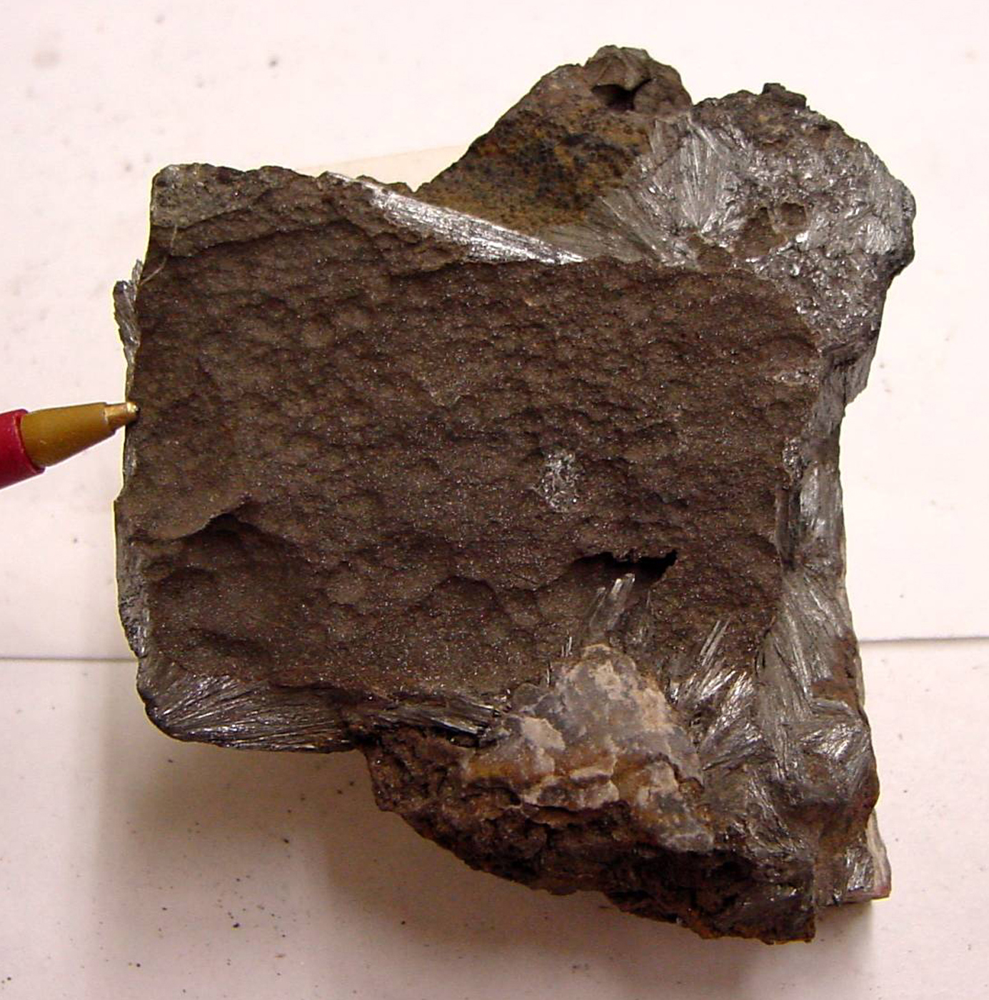
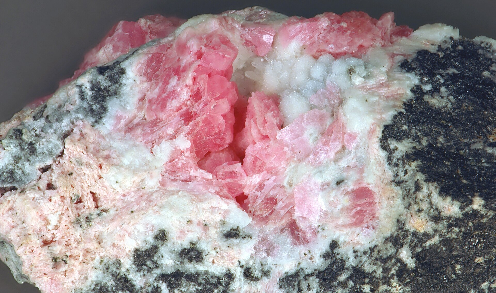
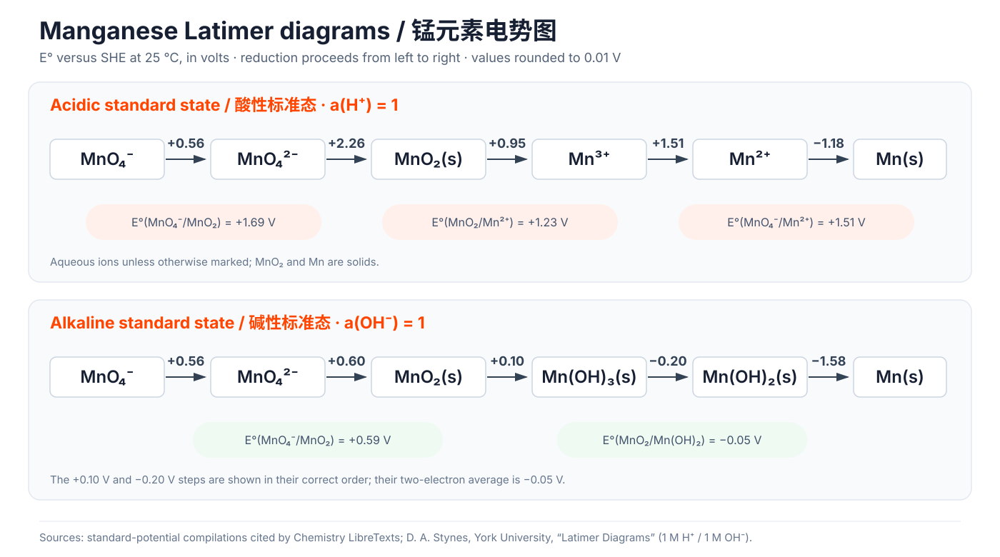
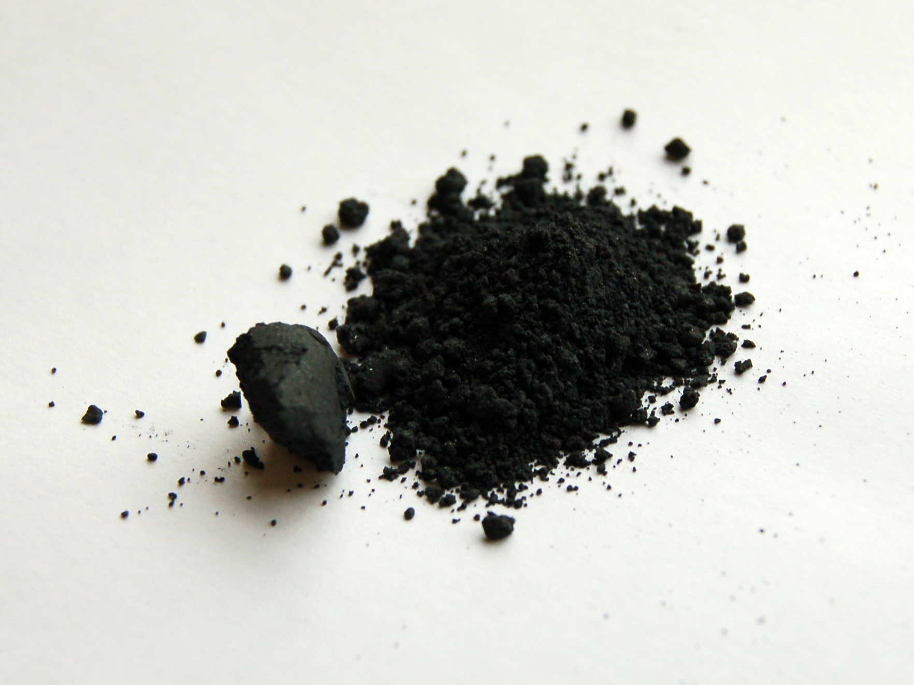
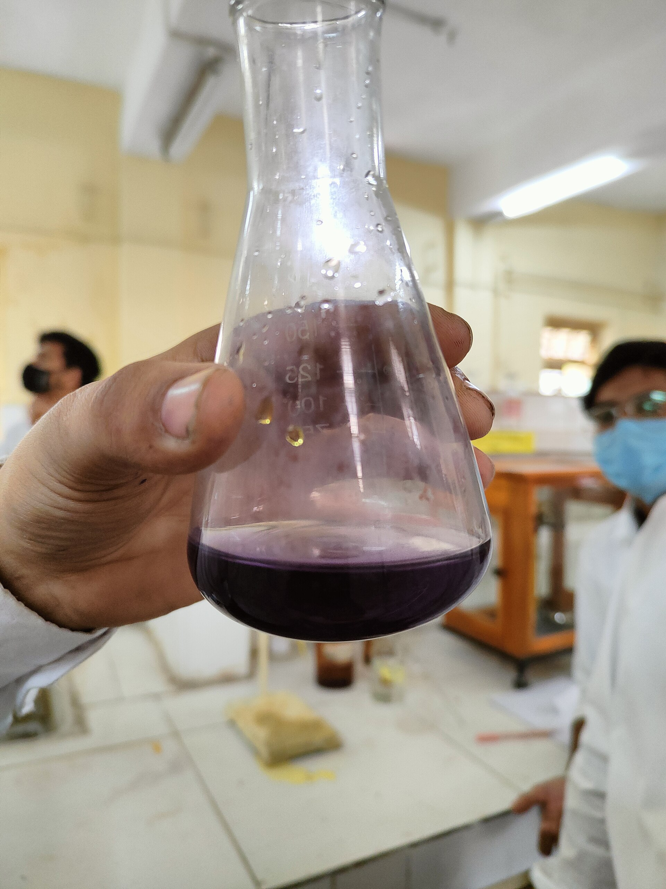
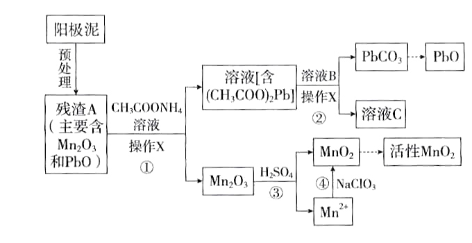
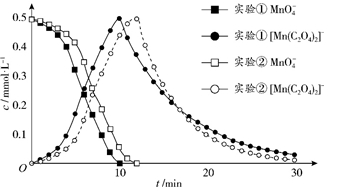

<meta data-alternate="https://freshmark.sunisalex.org/en/posts/chemistry/inorganic/manganese/" data-article="true" data-canonical="https://freshmark.sunisalex.org/posts/chemistry/inorganic/manganese/" data-description="Abstract 锰(Mn)位于 锰副族元素 ,后者位于$VIIB$族,包括锰(Mn),锝(Tc),铼(Re)和𬭛(Bh)四种过渡金属元素. 锰的成矿主要以 氧化物 形式出现: - 软锰矿$\ce{MnO2}$ - 黑锰矿$\ce{Mn3O4}$ - 方锰矿$\ce{MnO}$ - 菱锰矿$\ce{MnCO3}$" data-freshmark-page data-title="[锰]五彩斑斓的黑 — Freshmark"><main><header class="container article-header"><a href="/" class="back-link">← 返回全部文章</a><p class="eyebrow article-subject">化学</p><h1>[锰]五彩斑斓的黑</h1><p class="article-dek">Abstract 锰(Mn)位于 锰副族元素 ,后者位于<span class="math-expression math-inline" data-math-source="VIIB"></span>族,包括锰(Mn),锝(Tc),铼(Re)和𬭛(Bh)四种过渡金属元素. 锰的成矿主要以 氧化物 形式出现: - 软锰矿<span class="math-expression math-inline" data-math-source="\ce{MnO2}"></span>&#32;- 黑锰矿<span class="math-expression math-inline" data-math-source="\ce{Mn3O4}"></span>&#32;- 方锰矿<span class="math-expression math-inline" data-math-source="\ce{MnO}"></span>&#32;- 菱锰矿<span class="math-expression math-inline" data-math-source="\ce{MnCO3}"></span></p><div class="article-meta"><time datetime="2026-07-25">2026年7月25日</time><span>18 分钟阅读</span><span>无机化学 · 锰 · 氧化还原反应</span><span class="view-count" data-article-view-count hidden>本文访问量 <strong data-article-views></strong></span><a href="index.md" download>下载 Markdown</a><button type="button" class="article-share" data-share-article data-share-text="Abstract 锰(Mn)位于 锰副族元素 ,后者位于$VIIB$族,包括锰(Mn),锝(Tc),铼(Re)和𬭛(Bh)四种过渡金属元素. 锰的成矿主要以 氧化物 形式出现: - 软锰矿$\ce{MnO2}$ - 黑锰矿$\ce{Mn3O4}$ - 方锰矿$\ce{MnO}$ - 菱锰矿$\ce{MnCO3}$" data-share-title="[锰]五彩斑斓的黑"><span data-share-label>分享文章</span></button><output aria-live="polite" class="visually-hidden" data-share-status role="status"></output></div></header><div class="article-wrap"><aside class="toc"><div class="toc-head"><p>本文目录</p><button type="button" class="toc-toggle" aria-expanded="false" aria-label="展开或收起目录" data-toc-toggle><span class="toc-toggle-label">目录</span><span class="toc-toggle-icon" aria-hidden="true"></span></button></div><nav aria-label="目录" class="toc-links" data-toc-links><a href="#abstract" class="toc-level-1">Abstract</a><a href="#单质" class="toc-level-1">单质</a><a href="#化合物" class="toc-level-1"><span class="math-expression math-inline" data-math-source="Mn(II)"></span>化合物</a><a href="#mnii" class="toc-level-2">Mn(II)</a><a href="#易溶盐" class="toc-level-3">易溶盐</a><a href="#难溶性化合物" class="toc-level-2">难溶性化合物</a><a href="#还原性" class="toc-level-2">还原性</a><a href="#配位化合物" class="toc-level-2">配位化合物</a><a href="#弱场配体高自旋八面体配位化合物" class="toc-level-3">弱场配体:高自旋八面体配位化合物</a><a href="#弱场配体高自旋四面体配位化合物" class="toc-level-3">弱场配体:高自旋四面体配位化合物</a><a href="#弱场配体低自旋八面体配位化合物" class="toc-level-3">弱场配体:低自旋八面体配位化合物</a><a href="#化合物-2" class="toc-level-1"><span class="math-expression math-inline" data-math-source="Mn(III)"></span>化合物</a><a href="#的化合物" class="toc-level-1"><span class="math-expression math-inline" data-math-source="Mn(IV)"></span>的化合物</a><a href="#的化合物-2" class="toc-level-1"><span class="math-expression math-inline" data-math-source="Mn(VI)"></span>的化合物</a><a href="#的化合物-3" class="toc-level-1"><span class="math-expression math-inline" data-math-source="Mn(VII)"></span>的化合物</a><a href="#强氧化性" class="toc-level-2">强氧化性</a><a href="#不稳定性" class="toc-level-2">不稳定性</a><a href="#高锰酸钾的制备" class="toc-level-2">高锰酸钾的制备</a><a href="#真题操练" class="toc-level-1">真题操练</a><a href="#溶液酸碱性对-还原性的影响" class="toc-level-2">溶液酸碱性对 <span class="math-expression math-inline" data-math-source="\ce{Mn(II)}"></span>&#32;还原性的影响</a><a href="#高锰酸钾的制备提纯与产率测定" class="toc-level-2">高锰酸钾的制备、提纯与产率测定</a><a href="#与-溶液的反应" class="toc-level-2"><span class="math-expression math-inline" data-math-source="\mathrm{Na}"></span>&#32;与 <span class="math-expression math-inline" data-math-source="\mathrm{KMnO_4}"></span>溶液的反应</a><a href="#与-溶液的反应-2" class="toc-level-2"><span class="math-expression math-inline" data-math-source="\mathrm{Na_2S}"></span>&#32;与 <span class="math-expression math-inline" data-math-source="\mathrm{KMnO_4}"></span>&#32;溶液的反应</a><a href="#锰及其化合物的工业应用" class="toc-level-2">锰及其化合物的工业应用</a><a href="#检测方法探究" class="toc-level-2"><span class="math-expression math-inline" data-math-source="\mathrm{Mn^{2+}}"></span>&#32;检测方法探究</a><a href="#草酸浓度对-反应速率的影响" class="toc-level-2">草酸浓度对 <span class="math-expression math-inline" data-math-source="\ce{KMnO4}"></span>&#32;反应速率的影响</a><a href="#设计实验" class="toc-level-3">设计实验</a><a href="#实施实验" class="toc-level-3">实施实验</a><a href="#深入探究" class="toc-level-3">深入探究</a><a href="#结论与反思" class="toc-level-3">结论与反思</a><a href="#总结" class="toc-level-2">总结</a><a href="#图片与数据来源" class="toc-level-2">图片与数据来源</a></nav></aside><article class="prose"><h1 id="abstract">Abstract</h1><p>锰(Mn)位于<strong>锰副族元素</strong>,后者位于<span class="math-expression math-inline" data-math-source="VIIB"></span>族,包括锰(Mn),锝(Tc),铼(Re)和𬭛(Bh)四种过渡金属元素.</p><p>锰的成矿主要以<strong>氧化物</strong>形式出现:</p><ul><li>软锰矿<span class="math-expression math-inline" data-math-source="\ce{MnO2}"></span></li><li><span class="chemical-color" data-color="black">黑</span>锰矿<span class="math-expression math-inline" data-math-source="\ce{Mn3O4}"></span></li><li>方锰矿<span class="math-expression math-inline" data-math-source="\ce{MnO}"></span></li><li>菱锰矿<span class="math-expression math-inline" data-math-source="\ce{MnCO3}"></span></li></ul><figure class="prose-figure"><picture class="responsive-picture"><source srcset="pyrolusite-usgs.freshmark-0251a08167ee-480w.avif 480w, pyrolusite-usgs.freshmark-0251a08167ee-960w.avif 960w, pyrolusite-usgs.freshmark-0251a08167ee-1385w.avif 1385w" type="image/avif"><source srcset="pyrolusite-usgs.freshmark-0251a08167ee-480w.webp 480w, pyrolusite-usgs.freshmark-0251a08167ee-960w.webp 960w, pyrolusite-usgs.freshmark-0251a08167ee-1385w.webp 1385w" type="image/webp"></picture><figcaption>软锰矿标本，主要成分为 MnO₂；铅笔尖用于表示比例。Andrew Silver / USGS Mineral Specimens，经 Wikimedia Commons，公有领域。</figcaption></figure><figure class="prose-figure"><picture class="responsive-picture"><source srcset="rhodochrosite.freshmark-080323b0df0b-480w.avif 480w, rhodochrosite.freshmark-080323b0df0b-960w.avif 960w, rhodochrosite.freshmark-080323b0df0b-1440w.avif 1440w" type="image/avif"><source srcset="rhodochrosite.freshmark-080323b0df0b-480w.webp 480w, rhodochrosite.freshmark-080323b0df0b-960w.webp 960w, rhodochrosite.freshmark-080323b0df0b-1440w.webp 1440w" type="image/webp"></picture><figcaption>菱锰矿是碳酸锰矿物 MnCO₃；图中粉红色晶体的视野宽约 5.9 cm。James St. John / Wikimedia Commons，CC BY 2.0。</figcaption></figure><p>锰副族元素基态原子的价层电子构型:<span class="math-expression math-inline" data-math-source="(n-1)d^5ns^2"></span>,最高氧化态为<span class="math-expression math-inline" data-math-source="+7"></span>. 该族元素中锰的氧化态最丰富多彩,且<span class="math-expression math-inline" data-math-source="+2"></span>氧化态是最常见,最稳定的,其中<span class="math-expression math-inline" data-math-source="\ce{Mn^2+}"></span>存在于固体,溶液和配位化合物中,<span class="math-expression math-inline" data-math-source="Mn(VII)"></span>有强氧化性.</p><p>不同于<span class="math-expression math-inline" data-math-source="Mn"></span>的特点,<span class="math-expression math-inline" data-math-source="Tc,Re"></span>的<span class="math-expression math-inline" data-math-source="+7"></span>氧化态是最常见,最稳定的,仅显微弱的氧化性,而<span class="math-expression math-inline" data-math-source="+2"></span>和更低氧化态不稳定且是强还原剂.</p><p>总之,在锰副族元素中,自上而下:</p><ul><li><strong>高氧化态</strong>稳定性<strong>递增</strong></li><li><strong>低氧化态</strong>稳定性<strong>递减</strong></li></ul><figure class="prose-figure"><figcaption>锰、锝、铼在酸性条件下的元素电势图，电势相对于标准氢电极。数据取自 2023 年第 55 届 IChO 官方题目；原题空缺的 E°(TcO₄⁻/TcO₂)=+0.74 V 和 E°(ReO₂/Re)=+0.31 V 按官方答案补全。</figcaption></figure><figure class="prose-figure"><figcaption>25 ℃时锰在酸性标准态（1 M H⁺）和碱性标准态（1 M OH⁻）中的元素电势图，电势相对于标准氢电极，数值取至 0.01 V。注意 MnO₂/Mn(OH)₃ 为 +0.10 V，Mn(OH)₃/Mn(OH)₂ 为 −0.20 V。</figcaption></figure><p>言归正传,本文是锰副族元素的开端,只研究锰元素.</p><h1 id="单质">单质</h1><p>金属锰呈<span class="chemical-color" data-color="silver-white">银白色</span>,暴露在空气中的锰,以及粉末状的锰都是<span class="chemical-color" data-color="gray">灰色</span>的.</p><figure class="prose-figure"><picture class="responsive-picture"><source srcset="manganese-metal.freshmark-9d598c14e51a-480w.avif 480w, manganese-metal.freshmark-9d598c14e51a-960w.avif 960w, manganese-metal.freshmark-9d598c14e51a-1184w.avif 1184w" type="image/avif"><source srcset="manganese-metal.freshmark-9d598c14e51a-480w.webp 480w, manganese-metal.freshmark-9d598c14e51a-960w.webp 960w, manganese-metal.freshmark-9d598c14e51a-1184w.webp 1184w" type="image/webp"></picture><figcaption>锰金属碎片；新鲜金属具有金属光泽，表面暴露于空气后会变暗。Jurii / Wikimedia Commons，CC BY 3.0。</figcaption></figure><p>铝热反应还原<span class="math-expression math-inline" data-math-source="\ce{MnO2/Mn3O4}"></span>可以制备纯锰.</p><p>由电极电势<span class="math-expression math-inline" data-math-source="E^\ominus(Mn^{2+}/Mn)=-1.18V"></span>知锰是活泼金属,能溶解在冷的非氧化性稀酸里,例如:</p><p><span class="math-expression math-display" data-math-source="\ce{Mn + 2HCl(aq)-&gt;MnCl2 + H2 ^}" data-math-display></span></p><p>在室温下,锰对非金属的反应活性不高,但加热时容易发生反应:</p><ul><li>在空气中加热生成<span class="math-expression math-inline" data-math-source="\ce{Mn3O4}"></span></li><li>在高温下可与卤素,硫,碳,磷作用</li><li>与冷水几乎不反应,但与热水生成<span class="math-expression math-inline" data-math-source="\ce{Mn(OH)2}"></span>并放出<span class="math-expression math-inline" data-math-source="\ce{H2}"></span>(类似于金属镁)</li></ul><h1 id="化合物"><span class="math-expression math-inline" data-math-source="Mn(II)"></span>化合物</h1><p>常见的锰化合物:</p><ul><li><span class="math-expression math-inline" data-math-source="Mn(II)"></span>盐类</li><li><span class="math-expression math-inline" data-math-source="Mn(IV)"></span>氧化物</li><li>高锰酸盐.</li></ul><h2 id="mnii">Mn(II)</h2><h3 id="易溶盐">易溶盐</h3><p><span class="math-expression math-inline" data-math-source="Mn(II)"></span>的强酸盐易溶:</p><ul><li><span class="math-expression math-inline" data-math-source="\ce{MnSO4}"></span></li><li><span class="math-expression math-inline" data-math-source="\ce{MnCl2}"></span></li><li><span class="math-expression math-inline" data-math-source="\ce{Mn(NO3)2}"></span></li></ul><p><span class="math-expression math-inline" data-math-source="\ce{Mn^2+}"></span>的5个d电子平行自旋,电子<span class="math-expression math-inline" data-math-source="d-d"></span>跃迁概率小,化合物颜色一般较浅.</p><ul><li>浓<span class="math-expression math-inline" data-math-source="\ce{Mn^2+}"></span>溶液为<span class="chemical-color" data-color="pink">粉红色</span></li><li>稀溶液接近<span class="chemical-color" data-color="colorless">无色</span></li></ul><p><span class="math-expression math-inline" data-math-source="\ce{Mn^2+}"></span>水合盐多数是<span class="chemical-color" data-color="pink">粉红色</span>或<span class="chemical-color" data-color="rose">玫瑰色</span>的,如:</p><ul><li><span class="math-expression math-inline" data-math-source="\ce{MnSO4.7H2O}"></span></li><li><span class="math-expression math-inline" data-math-source="\ce{MnCl2.6H2O}"></span></li></ul><p>以下的无水盐为<span class="chemical-color" data-color="white">白色</span>:</p><ul><li><span class="math-expression math-inline" data-math-source="\ce{MnSO4}"></span></li><li><span class="math-expression math-inline" data-math-source="\ce{Mn(NO3)2}"></span></li></ul><h2 id="难溶性化合物">难溶性化合物</h2><p><span class="math-expression math-inline" data-math-source="Mn(II)"></span>的氢氧化物和多数弱酸盐难溶.</p><ul><li><span class="math-expression math-inline" data-math-source="\ce{MnCO3}"></span>:<span class="chemical-color" data-color="pink">粉色</span></li><li><span class="math-expression math-inline" data-math-source="\ce{Mn(OH)2}"></span>:<span class="chemical-color" data-color="white">白色</span></li><li><span class="math-expression math-inline" data-math-source="\alpha-\ce{MnS}"></span>:<span class="chemical-color" data-color="green">绿色</span></li><li><span class="math-expression math-inline" data-math-source="\ce{MnC2O4.2H2O}"></span>:<span class="chemical-color" data-color="white">白色</span></li></ul><p>这些物质易溶于强酸中,这是过渡元素的一般规律.</p><p>需要注意的是,<span class="math-expression math-inline" data-math-source="\ce{MnS}"></span>难溶于水,但溶于弱酸(e.g. <span class="math-expression math-inline" data-math-source="\ce{HAc}"></span>),故不能在酸性溶液中沉淀</p><h2 id="还原性">还原性</h2><p>在<strong>碱性</strong>溶液中,<span class="math-expression math-inline" data-math-source="Mn(II)"></span>还原性较强,极易被氧化为<span class="math-expression math-inline" data-math-source="Mn(IV)"></span>.</p><p><span class="math-expression math-display" data-math-source="E^\ominus[\ce{MnO2/Mn(OH)2}]=-0.05V,E^\ominus(\ce{O2/OH-})=0.40V" data-math-display></span> <span class="math-expression math-display" data-math-source="\mathrm{Mn^{2+}} \xrightarrow{\mathrm{OH^-}} \mathrm{Mn(OH)_2} \text{ (white)} \xrightarrow{\mathrm{O_2}} \mathrm{MnO(OH)} \text{ (brown)} \xrightarrow{\mathrm{O_2}} \mathrm{MnO_2 \cdot nH_2O}" data-math-display></span> 氨水,强碱都可以让<span class="math-expression math-inline" data-math-source="\ce{Mn^2+}"></span>转化为碱性,<span class="chemical-color" data-color="near-white">近白色</span><span class="math-expression math-inline" data-math-source="\ce{Mn(OH)2}"></span>.</p><p><span class="math-expression math-inline" data-math-source="\ce{Mn(OH)2}"></span>极易被氧化,甚至水中少量溶解氧也可以将其氧化为<span class="chemical-color" data-color="brown-black">棕黑色</span>的<span class="math-expression math-inline" data-math-source="\ce{MnO(OH)2}"></span>(或者写作<span class="math-expression math-inline" data-math-source="\ce{MnO2.H2O,H2MnO3}"></span>),此反应可以用来测定溶解氧.</p><p><span class="math-expression math-inline" data-math-source="\ce{MnS,MnCO3,MnC2O4}"></span>沉淀在空气中放置或加热,都会被空气中的氧气氧化为<span class="math-expression math-inline" data-math-source="\ce{MnO(OH)2}"></span>.</p><p><span class="math-expression math-display" data-math-source="\ce{MnS + O2 + H2O -&gt; MnO(OH)2 + S}" data-math-display></span></p><p><span class="math-expression math-display" data-math-source="\ce{2MnCO3 + O2 + 2H2O -&gt;[\triangle] 2MnO(OH)2 + 2CO2}" data-math-display></span></p><p>无氧环境中，MnO 可由 MnC₂O₄ 和 MnCO₃ 热分解制得.</p><p><span class="math-expression math-display" data-math-source="\mathrm{MnC_2O_4(s)} \ce{-&gt;[\Delta]} \mathrm{MnO(s)} + \mathrm{CO(g)} + \mathrm{CO_2(g)}" data-math-display></span></p><p><span class="math-expression math-display" data-math-source="\mathrm{MnCO_3(s)} \ce{-&gt;[\Delta]} \mathrm{MnO(s)} + \mathrm{CO_2(g)}" data-math-display></span></p><p>在<strong>酸性</strong>溶液中,<span class="math-expression math-inline" data-math-source="Mn(II)"></span>的还原性较弱:</p><p><span class="math-expression math-display" data-math-source="E^\ominus(\ce{MnO4-/Mn^2+)=1.51V}" data-math-display></span></p><p>强氧化剂可以把<span class="math-expression math-inline" data-math-source="\ce{Mn^2+}"></span>氧化为<span class="math-expression math-inline" data-math-source="\ce{MnO4-}"></span>:</p><ul><li><span class="math-expression math-inline" data-math-source="\ce{S2O8^2--&gt;[Ag+]SO4^2-}"></span></li><li><span class="math-expression math-inline" data-math-source="\ce{BiO3--&gt;Bi^3+}"></span></li><li><span class="math-expression math-inline" data-math-source="\ce{PbO2-&gt;Pb^2+}"></span></li></ul><p>其中,前两个反应常用于鉴定<span class="math-expression math-inline" data-math-source="\ce{Mn^2+}"></span>.</p><p>注意,<span class="math-expression math-inline" data-math-source="\ce{c(Mn^2+)}"></span>不宜过大(特别是反应1),否则<span class="math-expression math-inline" data-math-source="\ce{Mn^2+}"></span>容易与<span class="math-expression math-inline" data-math-source="\ce{MnO4-}"></span>发生归中反应,生成<span class="chemical-color" data-color="brown-black">棕黑色</span>的<span class="math-expression math-inline" data-math-source="\ce{MnO2}"></span>.</p><p><span class="math-expression math-inline" data-math-source="Mn(II)"></span>盐受热分解,若酸根有氧化性,则<span class="math-expression math-inline" data-math-source="Mn(II)"></span>被氧化:</p><p><span class="math-expression math-display" data-math-source="\ce{Mn(NO3)2-&gt;[\triangle]MnO2 + 2NO2 ^}" data-math-display></span></p><p><span class="math-expression math-display" data-math-source="\ce{Mn(ClO4)2 -&gt;[\triangle] MnO2 + Cl2 ^ + 3O2 ^}" data-math-display></span></p><p>类比一下,高氯酸亚硝酰<span class="math-expression math-inline" data-math-source="\ce{NOClO4}"></span>的一种分解方式为:</p><p><span class="math-expression math-display" data-math-source="\ce{2NOClO4 -&gt;[\triangle] N2O4 + Cl2 ^ + 3O2 ^}" data-math-display></span></p><h2 id="配位化合物">配位化合物</h2><h3 id="弱场配体高自旋八面体配位化合物">弱场配体:高自旋八面体配位化合物</h3><p><span class="math-expression math-inline" data-math-source="\ce{Mn^2+}"></span>电子组态<span class="math-expression math-inline" data-math-source="3d^5"></span>,与<strong>弱场配体</strong>形成的高自旋八面体配位化合物,电子排布为<span class="math-expression math-inline" data-math-source="\ce{(t_{2g})^3}(e_g)^2"></span>,晶体场稳定化能为0.</p><p>水合离子<span class="math-expression math-inline" data-math-source="\ce{[Mn(H2O)6]^2+}"></span>呈<span class="chemical-color" data-color="pale-pink">极浅的粉红色</span>(浓度小于1M时几乎不可见),这是因为在这类高自旋化合物中,d-d跃迁不仅需要电子从低能级跃迁至高能级,还改变了电子自旋方向,这种跃迁称为<strong>自旋禁阻</strong>(spin forbidden). 发生这种跃迁的几率很小,所以吸收可见光的机会很小.</p><h3 id="弱场配体高自旋四面体配位化合物">弱场配体:高自旋四面体配位化合物</h3><p><span class="math-expression math-inline" data-math-source="\ce{Mn^2+}"></span>在乙醇溶液中生成<span class="chemical-color" data-color="yellow">黄色</span>的<span class="math-expression math-inline" data-math-source="\ce{[MnX_4]^2-(X=Cl,Br,I)}"></span>,电子排布为<span class="math-expression math-inline" data-math-source="(e)^2(t_2)^3"></span>,<span class="math-expression math-inline" data-math-source="CFSE=0"></span></p><h3 id="弱场配体低自旋八面体配位化合物">弱场配体:低自旋八面体配位化合物</h3><p>只有 Mn<span class="math-expression math-inline" data-math-source="^{(II)}"></span>&#32;与一些强的配体才能形成低自旋的有颜色的配合物，如<span class="chemical-color" data-color="blue-violet">蓝紫色</span>的<span class="math-expression math-inline" data-math-source="[Mn(CN)_6]^{4-}"></span>,电子排布为<span class="math-expression math-inline" data-math-source="(e)^5(t2)^0"></span>,<span class="math-expression math-inline" data-math-source="CFSE=(2\Delta-2P)"></span>,此化合物在空气中容易被氧化为<span class="chemical-color" data-color="brown-red">棕红色</span>的<span class="math-expression math-inline" data-math-source="[Mn(CN)_6]^{3-}"></span>.</p><blockquote><p>本节由 Claude（Anthropic 开发的 AI 模型）补充，附在作者解答之后，并非原作者所写。</p></blockquote><p><strong>更正（Claude 补充）</strong> 本小节标题应为&quot;<strong>强场</strong>配体：低自旋八面体配位化合物&quot;（<span class="math-expression math-inline" data-math-source="\ce{CN-}"></span>&#32;是强场配体，正文也写了&quot;强的配体&quot;）。八面体场中 d 轨道分裂为 <span class="math-expression math-inline" data-math-source="t_{2g}"></span>&#32;和 <span class="math-expression math-inline" data-math-source="e_g"></span>（<span class="math-expression math-inline" data-math-source="e"></span>、<span class="math-expression math-inline" data-math-source="t_2"></span>&#32;是四面体场的记号），所以电子排布应写作 <span class="math-expression math-inline" data-math-source="(t_{2g})^5(e_g)^0"></span>。与高自旋 <span class="math-expression math-inline" data-math-source="(t_{2g})^3(e_g)^2"></span>&#32;相比，它多获得 <span class="math-expression math-inline" data-math-source="2\Delta_o"></span>&#32;的稳定化能，但多了两对成对电子，所以净稳定化为 <span class="math-expression math-inline" data-math-source="2\Delta_o-2P"></span>，与文中数值一致。</p><h1 id="化合物-2"><span class="math-expression math-inline" data-math-source="Mn(III)"></span>化合物</h1><p><span class="math-expression math-display" data-math-source="\mathrm{MnO_2} \xrightarrow{+0.95\ \mathrm{V}} \mathrm{Mn^{3+}} \xrightarrow{+1.51\ \mathrm{V}} \mathrm{Mn^{2+}}" data-math-display></span> 由元素电势图,<span class="math-expression math-inline" data-math-source="Mn(III)"></span>氧化性强,在溶液中不稳定,易歧化.</p><p>重要的<span class="math-expression math-inline" data-math-source="Mn(III)"></span>化合物:</p><ul><li><span class="math-expression math-inline" data-math-source="\ce{Mn(CH3COO)3.3H2O}"></span>:<span class="chemical-color" data-color="purple-red">紫红色</span></li><li><span class="math-expression math-inline" data-math-source="\ce{MnF3}"></span>:<span class="chemical-color" data-color="purple-red">紫红色</span>,由<span class="math-expression math-inline" data-math-source="\ce{MnF2}"></span>和<span class="math-expression math-inline" data-math-source="\ce{F2}"></span>反应得到</li><li><span class="math-expression math-inline" data-math-source="\ce{Mn2O3}"></span>:<span class="chemical-color" data-color="black">黑色</span>,由<span class="math-expression math-inline" data-math-source="\ce{MnO2}"></span>在低于800℃下加热得到</li></ul><p>重要的<span class="math-expression math-inline" data-math-source="Mn(III)"></span>配位化合物:</p><ul><li><span class="math-expression math-inline" data-math-source="\ce{[Mn(CN)6]^3-}"></span>:<span class="chemical-color" data-color="brown-red">棕红色</span></li><li><span class="math-expression math-inline" data-math-source="\ce{[Mn(PO4)2]^3-}"></span>:<span class="chemical-color" data-color="purple">紫色</span></li></ul><h1 id="的化合物"><span class="math-expression math-inline" data-math-source="Mn(IV)"></span>的化合物</h1><p><span class="math-expression math-inline" data-math-source="\ce{MnO2}"></span>粉末呈<span class="chemical-color" data-color="black">黑色</span>,在溶液中生成的沉淀为<span class="chemical-color" data-color="brown-black">棕黑色</span>的水合物<span class="math-expression math-inline" data-math-source="\ce{MnO2.H2O}"></span>.</p><figure class="prose-figure"><picture class="responsive-picture"><source srcset="manganese-dioxide.freshmark-844c9ae21e97-480w.avif 480w, manganese-dioxide.freshmark-844c9ae21e97-960w.avif 960w, manganese-dioxide.freshmark-844c9ae21e97-1440w.avif 1440w" type="image/avif"><source srcset="manganese-dioxide.freshmark-844c9ae21e97-480w.webp 480w, manganese-dioxide.freshmark-844c9ae21e97-960w.webp 960w, manganese-dioxide.freshmark-844c9ae21e97-1440w.webp 1440w" type="image/webp"></picture><figcaption>二氧化锰（MnO₂）粉末的典型黑色外观。Benjah-bmm27 / Wikimedia Commons，公有领域。</figcaption></figure><p><span class="math-expression math-inline" data-math-source="\ce{MnO2}"></span>在通常情况下很稳定,不溶于<span class="math-expression math-inline" data-math-source="\ce{H2O}"></span>,稀酸和稀碱,且在酸和碱中不歧化. 但<span class="math-expression math-inline" data-math-source="\ce{MnO2}"></span>是两性氧化物,可以与浓酸,浓碱缓慢反应.</p><p><span class="math-expression math-inline" data-math-source="\ce{MnO2}"></span>与<span class="math-expression math-inline" data-math-source="\ce{NaOH}"></span>隔绝空气共熔,生成亚锰酸盐<span class="math-expression math-inline" data-math-source="\ce{Na2MnO3}"></span>.</p><p><span class="math-expression math-display" data-math-source="\ce{MnO2 + 2NaOH -&gt;[\Delta]Na2MnO3 + H2O}" data-math-display></span></p><p><span class="math-expression math-inline" data-math-source="\ce{MnO2}"></span>与<span class="math-expression math-inline" data-math-source="\ce{NaOH}"></span>也能部分发生相同反应,说明<span class="math-expression math-inline" data-math-source="\ce{MnO2}"></span>具有酸性.</p><p><span class="math-expression math-inline" data-math-source="Mn(IV)"></span>处于中间氧化态,既可以作氧化剂也可以做还原剂.</p><p>在强酸中,<span class="math-expression math-inline" data-math-source="\ce{MnO2}"></span>有较强的氧化性,可以把<span class="math-expression math-inline" data-math-source="I^-"></span>氧化为<span class="math-expression math-inline" data-math-source="I_2"></span>,把<span class="math-expression math-inline" data-math-source="\ce{Fe^2+}"></span>氧化为<span class="math-expression math-inline" data-math-source="\ce{Fe^3+}"></span>,而且与浓盐酸混合后加热将生成氯气.</p><p>将盛 <span class="math-expression math-inline" data-math-source="\mathrm{MnO_2}"></span>&#32;粉末和浓 <span class="math-expression math-inline" data-math-source="\mathrm{H_2SO_4}"></span>&#32;混合物的试管水浴加热一段时间，冷却并静止后，试管上部呈<span class="chemical-color" data-color="purple-red">紫红色</span>，说明有 <span class="math-expression math-inline" data-math-source="\mathrm{Mn^{3+}}"></span>&#32;生成：</p><p><span class="math-expression math-display" data-math-source="4\mathrm{MnO_2} + 6\mathrm{H_2SO_4}(\text{浓}) \xlongequal{\Delta} 2\mathrm{Mn_2(SO_4)_3} + 6\mathrm{H_2O} + \mathrm{O_2} \uparrow" data-math-display></span></p><p><span class="math-expression math-inline" data-math-source="\mathrm{Mn^{3+}}"></span>&#32;不稳定，温度升高则转化为更稳定的 <span class="math-expression math-inline" data-math-source="\mathrm{Mn^{2+}}"></span>：</p><p><span class="math-expression math-display" data-math-source="2\mathrm{Mn_2(SO_4)_3} + 2\mathrm{H_2O} \xlongequal{\Delta} 4\mathrm{MnSO_4} + \mathrm{O_2} \uparrow + 2\mathrm{H_2SO_4}" data-math-display></span></p><p>在碱性条件下，<span class="math-expression math-inline" data-math-source="\mathrm{MnO_2}"></span>&#32;可被氧化至 <span class="math-expression math-inline" data-math-source="\mathrm{Mn(VI)}"></span>。<span class="math-expression math-inline" data-math-source="\mathrm{MnO_2}"></span>&#32;与碱混合后加入氯酸钾(2026北京化学高考)、硝酸钾等氧化剂（或利用空气中的 <span class="math-expression math-inline" data-math-source="\mathrm{O_2}"></span>），加热共熔则被氧化为 <span class="math-expression math-inline" data-math-source="\mathrm{Mn(VI)}"></span>，例如：</p><p><span class="math-expression math-display" data-math-source="3\mathrm{MnO_2} + 6\mathrm{KOH} + \mathrm{KClO_3} \xlongequal{\text{共熔}} 3\mathrm{K_2MnO_4} + \mathrm{KCl} + 3\mathrm{H_2O}" data-math-display></span></p><p><span class="math-expression math-display" data-math-source="2\mathrm{MnO_2} + 4\mathrm{KOH} + \mathrm{O_2} \xlongequal{\text{共熔}} 2\mathrm{K_2MnO_4} + 2\mathrm{H_2O}" data-math-display></span></p><h1 id="的化合物-2"><span class="math-expression math-inline" data-math-source="Mn(VI)"></span>的化合物</h1><p>Mn(Ⅵ)的化合物中，比较稳定的是锰酸钾（<span class="math-expression math-inline" data-math-source="\mathrm{K_2MnO_4}"></span>），<span class="chemical-color" data-color="dark-green">深绿色</span>晶体，在190 ℃分解为亚锰酸钾(<span class="math-expression math-inline" data-math-source="\ce{K2MnO3}"></span>)和氧气，Mn(Ⅵ)在强碱溶液中较稳定。</p><figure class="prose-figure"><picture class="responsive-picture"><source srcset="potassium-manganate.freshmark-9ae7002ff552-480w.avif 480w, potassium-manganate.freshmark-9ae7002ff552-960w.avif 960w, potassium-manganate.freshmark-9ae7002ff552-1382w.avif 1382w" type="image/avif"><source srcset="potassium-manganate.freshmark-9ae7002ff552-480w.webp 480w, potassium-manganate.freshmark-9ae7002ff552-960w.webp 960w, potassium-manganate.freshmark-9ae7002ff552-1382w.webp 1382w" type="image/webp"></picture><figcaption>热高锰酸钾溶液经氢氧化钠处理后形成的深绿色锰酸根（MnO₄²⁻）溶液。Choij / Wikimedia Commons，公有领域。</figcaption></figure><p><span class="math-expression math-inline" data-math-source="\ce{MnO4^2-}"></span>&#32;只在浓强碱中较稳定；酸化或降低碱度时会发生歧化。该反应按酸性介质和水溶液形式可分别写为：</p><p><span class="math-expression math-display" data-math-source="\ce{3MnO4^2- + 4H+ -&gt; 2MnO4^- + MnO2 v + 2H2O}" data-math-display></span></p><p><span class="math-expression math-display" data-math-source="\ce{3MnO4^2- + 2H2O -&gt; 2MnO4^- + MnO2 v + 4OH^-}" data-math-display></span></p><p>后一式生成 <span class="math-expression math-inline" data-math-source="\ce{OH^-}"></span>，因此提高碱度会使平衡向左移动；只有在浓度较大的强碱中（<span class="math-expression math-inline" data-math-source="\mathrm{pH}&gt;14"></span>）锰酸钾才稳定。</p><p>将 <span class="math-expression math-inline" data-math-source="\mathrm{MnO_2}"></span>&#32;与 <span class="math-expression math-inline" data-math-source="\mathrm{KClO_3}"></span>、<span class="math-expression math-inline" data-math-source="\mathrm{KOH}"></span>&#32;混合后放入干燥试管中加热共熔，得到<span class="chemical-color" data-color="green">绿色</span>产物，冷却至室温后加入少量水得<span class="chemical-color" data-color="green">绿色</span>溶液，说明生成了锰酸钾；再加入大量水则溶液立即变<span class="chemical-color" data-color="purple-red">紫红色</span>并有<span class="chemical-color" data-color="brown">棕色</span>沉淀生成，说明加入大量水时碱的浓度降低，锰酸钾发生了歧化反应生成 <span class="math-expression math-inline" data-math-source="\mathrm{MnO_4^-}"></span>&#32;和 <span class="math-expression math-inline" data-math-source="\mathrm{MnO_2}"></span>。</p><p>需要注意,这样生产高锰酸钾,会有三分之一的锰元素被浪费(2026北京化学高考).</p><h1 id="的化合物-3"><span class="math-expression math-inline" data-math-source="Mn(VII)"></span>的化合物</h1><p>最重要的 <span class="math-expression math-inline" data-math-source="\mathrm{Mn}(\mathrm{VII})"></span>&#32;化合物是高锰酸钾 (<span class="math-expression math-inline" data-math-source="\mathrm{KMnO_4}"></span>)，<span class="chemical-color" data-color="purple-black">紫黑色</span>晶体。其水溶液的颜色与浓度有关，按浓度由低到高依次呈<span class="chemical-color" data-color="pink">粉红色</span>、<span class="chemical-color" data-color="red">红色</span>、<span class="chemical-color" data-color="purple-red">紫红色</span>、<span class="chemical-color" data-color="purple">紫色</span>、<span class="chemical-color" data-color="purple-black">紫黑色</span>。高锰酸钠 (<span class="math-expression math-inline" data-math-source="\mathrm{NaMnO_4}"></span>) 易潮解，也不易提纯。</p><figure class="prose-figure"><picture class="responsive-picture"><source srcset="potassium-permanganate-crystals.freshmark-423a872bb947-480w.avif 480w, potassium-permanganate-crystals.freshmark-423a872bb947-553w.avif 553w" type="image/avif"><source srcset="potassium-permanganate-crystals.freshmark-423a872bb947-480w.webp 480w, potassium-permanganate-crystals.freshmark-423a872bb947-553w.webp 553w" type="image/webp"></picture><figcaption>高锰酸钾（KMnO₄）的深紫色至紫黑色晶体。Walkerma / Wikimedia Commons，公有领域。</figcaption></figure><figure class="prose-figure"><picture class="responsive-picture"><source srcset="potassium-permanganate-solutions.freshmark-4ac802fb578b-480w.avif 480w, potassium-permanganate-solutions.freshmark-4ac802fb578b-960w.avif 960w, potassium-permanganate-solutions.freshmark-4ac802fb578b-1440w.avif 1440w" type="image/avif"><source srcset="potassium-permanganate-solutions.freshmark-4ac802fb578b-480w.webp 480w, potassium-permanganate-solutions.freshmark-4ac802fb578b-960w.webp 960w, potassium-permanganate-solutions.freshmark-4ac802fb578b-1440w.webp 1440w" type="image/webp"></picture><figcaption>不同浓度的高锰酸钾溶液；从左到右为 5×10⁻⁶、1×10⁻⁵、2×10⁻⁵、5×10⁻⁵、1×10⁻⁴、2×10⁻⁴、2.5×10⁻⁴、5×10⁻⁴ mol·L⁻¹，浓度升高时紫红色逐渐加深。Leiem / Wikimedia Commons，CC BY-SA 4.0。</figcaption></figure><h2 id="强氧化性">强氧化性</h2><p><span class="math-expression math-inline" data-math-source="\mathrm{KMnO_4}"></span>&#32;是最重要和最常用的氧化剂之一，它的氧化能力和还原产物因介质的酸碱性不同而不同：在强酸性溶液中被还原成 <span class="math-expression math-inline" data-math-source="\mathrm{Mn^{2+}}"></span>，在强碱性溶液中被还原成 <span class="math-expression math-inline" data-math-source="\mathrm{MnO_4^{2-}}"></span>，在近中性溶液中则被还原成 <span class="math-expression math-inline" data-math-source="\mathrm{MnO_2}"></span>，因为这些产物在相应的介质中稳定。如 <span class="math-expression math-inline" data-math-source="\mathrm{KMnO_4}"></span>&#32;与 <span class="math-expression math-inline" data-math-source="\mathrm{S}(\mathrm{IV})"></span>&#32;的反应：</p><p>酸性：</p><p><span class="math-expression math-display" data-math-source="2\mathrm{MnO_4^-} + 5\mathrm{H_2SO_3} \xlongequal{} 2\mathrm{Mn^{2+}} + 5\mathrm{SO_4^{2-}} + 4\mathrm{H^+} + 3\mathrm{H_2O}" data-math-display></span></p><p>中性：</p><p><span class="math-expression math-display" data-math-source="2\mathrm{MnO_4^-} + \mathrm{H_2O} + 3\mathrm{SO_3^{2-}} \xlongequal{} 2\mathrm{MnO_2} \downarrow + 3\mathrm{SO_4^{2-}} + 2\mathrm{OH^-}" data-math-display></span></p><p>碱性：</p><p><span class="math-expression math-display" data-math-source="2\mathrm{MnO_4^-} + 2\mathrm{OH^-} + \mathrm{SO_3^{2-}} \xlongequal{} 2\mathrm{MnO_4^{2-}} + \mathrm{SO_4^{2-}} + \mathrm{H_2O}" data-math-display></span></p><p>在酸性溶液中，<span class="math-expression math-inline" data-math-source="\mathrm{KMnO_4}"></span>&#32;是很强的氧化剂：</p><p><span class="math-expression math-display" data-math-source="\mathrm{MnO_4^-} + 8\mathrm{H^+} + 5\mathrm{e^-} \xlongequal{} \mathrm{Mn^{2+}} + 4\mathrm{H_2O} \quad E^\ominus = 1.51 \text{ V}" data-math-display></span></p><p>它可以氧化 <span class="math-expression math-inline" data-math-source="\mathrm{Cl^-}, \mathrm{Cr^{3+}}, \mathrm{I_2}"></span>&#32;等：</p><p><span class="math-expression math-display" data-math-source="2\mathrm{MnO_4^-} + 16\mathrm{H^+} + 10\mathrm{Cl^-} \xlongequal{} 2\mathrm{Mn^{2+}} + 5\mathrm{Cl_2} \uparrow + 8\mathrm{H_2O}" data-math-display></span></p><p><span class="math-expression math-display" data-math-source="6\mathrm{MnO_4^-} + 10\mathrm{Cr^{3+}} + 11\mathrm{H_2O} \xlongequal{} 6\mathrm{Mn^{2+}} + 5\mathrm{Cr_2O_7^{2-}} + 22\mathrm{H^+}" data-math-display></span></p><p><span class="math-expression math-display" data-math-source="2\mathrm{MnO_4^-} + \mathrm{I_2} + 4\mathrm{H^+} \xlongequal{} 2\mathrm{Mn^{2+}} + 2\mathrm{IO_3^-} + 2\mathrm{H_2O}" data-math-display></span></p><p><span class="math-expression math-inline" data-math-source="\mathrm{KMnO_4}"></span>&#32;与盐酸反应可用于实验室制备氯气，但不能实现随制随停，加之 <span class="math-expression math-inline" data-math-source="\mathrm{KMnO_4}"></span>&#32;比 <span class="math-expression math-inline" data-math-source="\mathrm{MnO_2}"></span>&#32;价格高，故实验室更多采用 <span class="math-expression math-inline" data-math-source="\mathrm{MnO_2}"></span>&#32;与浓盐酸反应制备氯气。</p><p>酸性条件下，<span class="math-expression math-inline" data-math-source="\mathrm{KMnO_4}"></span>&#32;与 <span class="math-expression math-inline" data-math-source="\mathrm{H_2C_2O_4}"></span>&#32;定量反应，可用于标定 <span class="math-expression math-inline" data-math-source="\mathrm{KMnO_4}"></span>&#32;溶液的浓度：</p><p><span class="math-expression math-display" data-math-source="2\mathrm{MnO_4^-} + 6\mathrm{H^+} + 5\mathrm{H_2C_2O_4} \xlongequal{} 2\mathrm{Mn^{2+}} + 10\mathrm{CO_2} \uparrow + 8\mathrm{H_2O}" data-math-display></span></p><p><span class="math-expression math-inline" data-math-source="\mathrm{KMnO_4}"></span>&#32;与 <span class="math-expression math-inline" data-math-source="\mathrm{Fe^{2+}}"></span>&#32;定量反应，可用于测定 <span class="math-expression math-inline" data-math-source="\mathrm{Fe^{2+}}"></span>&#32;的含量：</p><p>在容量分析中，<span class="math-expression math-inline" data-math-source="\mathrm{KMnO_4}"></span>&#32;常用作氧化还原滴定剂。在酸性溶液中，<span class="math-expression math-inline" data-math-source="\mathrm{MnO_4^-}"></span>&#32;被还原成 <span class="math-expression math-inline" data-math-source="\mathrm{Mn^{2+}}"></span>。在滴定过程中 <span class="math-expression math-inline" data-math-source="\mathrm{MnO_4^-}"></span>&#32;过量则溶液立即变<span class="chemical-color" data-color="red">红</span>，而稀的 <span class="math-expression math-inline" data-math-source="\mathrm{Mn^{2+}}"></span>&#32;溶液基本是<span class="chemical-color" data-color="colorless">无色</span>的，不影响终点的判断。滴定剂自身起着指示剂的作用。</p><figure class="prose-figure"><picture class="responsive-picture"><source srcset="permanganate-titration.freshmark-287e49e73df2-480w.avif 480w, permanganate-titration.freshmark-287e49e73df2-960w.avif 960w, permanganate-titration.freshmark-287e49e73df2-1440w.avif 1440w" type="image/avif"><source srcset="permanganate-titration.freshmark-287e49e73df2-480w.webp 480w, permanganate-titration.freshmark-287e49e73df2-960w.webp 960w, permanganate-titration.freshmark-287e49e73df2-1440w.webp 1440w" type="image/webp"></picture><figcaption>高锰酸钾滴定的实验照片，溶液的紫色来自 MnO₄⁻。原图未注明被滴定物、浓度或滴定阶段，因此不能仅凭照片判断终点。Bhaiyaji Smile 123 / Wikimedia Commons，CC BY 4.0。</figcaption></figure><p><span class="math-expression math-inline" data-math-source="\mathrm{KMnO_4}"></span>&#32;作为一种氧化剂被应用于许多有机制备反应中，如糖精、抗坏血酸（维生素 C）和烟酸等的制备。它也可以用于消毒及处理饮用水和工业用水。</p><h2 id="不稳定性">不稳定性</h2><p>高锰酸盐氧化性强，不稳定，在酸性溶液中明显分解，在中性或微碱性溶液中缓慢分解：</p><p><span class="math-expression math-display" data-math-source="4\mathrm{MnO_4^-} + 4\mathrm{H^+} \xlongequal{} 4\mathrm{MnO_2} \downarrow + 3\mathrm{O_2} \uparrow + 2\mathrm{H_2O}" data-math-display></span></p><p><span class="math-expression math-display" data-math-source="4\mathrm{MnO_4^-} + 4\mathrm{OH^-} \xlongequal{} 4\mathrm{MnO_4^{2-}} + \mathrm{O_2} \uparrow + 2\mathrm{H_2O}" data-math-display></span></p><p>光对高锰酸钾分解起催化作用，因此高锰酸钾溶液应当储存在<span class="chemical-color" data-color="brown">棕色</span>瓶中。由于分解反应的存在，其浓度会随时间而变化，所以高锰酸钾标准溶液需在使用前重新标定。</p><p>在固相中高锰酸盐稳定性比在溶液中高，但受热时也将分解。大约 <span class="math-expression math-inline" data-math-source="200\ ^\circ\mathrm{C}"></span>&#32;时分解为 <span class="math-expression math-inline" data-math-source="\mathrm{K_2MnO_4}"></span>&#32;和 <span class="math-expression math-inline" data-math-source="\mathrm{MnO_2}"></span>，并放出 <span class="math-expression math-inline" data-math-source="\mathrm{O_2}"></span>：</p><p><span class="math-expression math-display" data-math-source="2\mathrm{KMnO_4(s)} \xlongequal{200\ ^\circ\mathrm{C}} \mathrm{K_2MnO_4} + \mathrm{MnO_2} + \mathrm{O_2} \uparrow" data-math-display></span></p><p>将 <span class="math-expression math-inline" data-math-source="\mathrm{KMnO_4}"></span>&#32;放入干燥试管中小火加热，有爆鸣声，爆鸣声停止后，观察到固体不再有原来的晶体光泽；向试管中加入少量水后摇动试管，试管壁呈<span class="chemical-color" data-color="green">绿色</span>，说明 <span class="math-expression math-inline" data-math-source="\mathrm{KMnO_4}"></span>&#32;分解产物中有 <span class="math-expression math-inline" data-math-source="\mathrm{K_2MnO_4}"></span>。加入大量水后溶液立即变为<span class="chemical-color" data-color="purple">紫色</span>的，因为 <span class="math-expression math-inline" data-math-source="\mathrm{K_2MnO_4}"></span>&#32;歧化，有 <span class="math-expression math-inline" data-math-source="\mathrm{KMnO_4}"></span>&#32;生成。</p><p><span class="math-expression math-inline" data-math-source="\mathrm{KMnO_4}"></span>&#32;和冷的浓硫酸作用生成<span class="chemical-color" data-color="dark-green">暗绿色</span>油状七氧化二锰（<span class="math-expression math-inline" data-math-source="\mathrm{Mn_2O_7}"></span>）：</p><p><span class="math-expression math-display" data-math-source="2\mathrm{KMnO_4} + \mathrm{H_2SO_4(浓)} \xlongequal{低温} \mathrm{Mn_2O_7} + \mathrm{K_2SO_4} + \mathrm{H_2O}" data-math-display></span></p><p><span class="math-expression math-inline" data-math-source="\mathrm{Mn_2O_7}"></span>&#32;遇有机物即燃烧，受热爆炸分解，常温下缓慢放出 <span class="math-expression math-inline" data-math-source="\mathrm{O_2}"></span>，转化为 <span class="math-expression math-inline" data-math-source="\mathrm{MnO_2}"></span>。</p><h2 id="高锰酸钾的制备">高锰酸钾的制备</h2><p>高锰酸钾的制备经常以软锰矿 <span class="math-expression math-inline" data-math-source="\mathrm{MnO_2}"></span>&#32;为原料。</p><p>首先制取锰酸钾，将 <span class="math-expression math-inline" data-math-source="\mathrm{MnO_2}"></span>&#32;与 <span class="math-expression math-inline" data-math-source="\mathrm{KClO_3}"></span>、<span class="math-expression math-inline" data-math-source="\mathrm{KOH}"></span>&#32;的混合物加热共熔(2026北京化学高考)，得到<span class="chemical-color" data-color="green">绿色</span>产物锰酸钾：</p><p><span class="math-expression math-display" data-math-source="3\mathrm{MnO_2} + 6\mathrm{KOH} + \mathrm{KClO_3} \xlongequal{共熔} 3\mathrm{K_2MnO_4} + \mathrm{KCl} + 3\mathrm{H_2O}" data-math-display></span></p><p>用强氧化剂氧化 <span class="math-expression math-inline" data-math-source="\mathrm{K_2MnO_4}"></span>，可以得到 <span class="math-expression math-inline" data-math-source="\mathrm{KMnO_4}"></span>。例如，使用氯气为氧化剂：</p><p><span class="math-expression math-display" data-math-source="2 \mathrm { M n O _ { 4 } ^ { 2 - } } + \mathrm { C l _ { 2 } } \xlongequal { } 2 \mathrm { M n O _ { 4 } ^ { - } } + 2 \mathrm { C l ^ { - } }" data-math-display></span></p><p>生产中经常采用电解法, 电解 <span class="math-expression math-inline" data-math-source="\mathrm{K}_{2} \mathrm{MnO}_{4}"></span>&#32;溶液得到 <span class="math-expression math-inline" data-math-source="\mathrm{KMnO}_{4}"></span>&#32;:</p><p>阳极反应 <span class="math-expression math-inline" data-math-source="\quad \mathrm{MnO}_{4}^{2-} \xlongequal { } \mathrm{MnO}_{4}^{-}+\mathrm{e}^{-}"></span></p><p>阴极反应 <span class="math-expression math-inline" data-math-source="\quad 2 \mathrm{H}_{2} \mathrm{O}+2 \mathrm{e}^{-} \xlongequal { } \mathrm{H}_{2}+2 \mathrm{OH}^{-}"></span></p><p>总反应 <span class="math-expression math-inline" data-math-source="\quad 2 \mathrm{~K}_{2} \mathrm{MnO}_{4}+2 \mathrm{H}_{2} \mathrm{O} \xlongequal { \text { 通电 } } 2 \mathrm{KMnO}_{4}+2 \mathrm{KOH}+\mathrm{H}_{2} \uparrow"></span></p><h1 id="真题操练">真题操练</h1><h2 id="溶液酸碱性对-还原性的影响">溶液酸碱性对 <span class="math-expression math-inline" data-math-source="\ce{Mn(II)}"></span>&#32;还原性的影响</h2><p><strong>（2022 北京化学高考第 19 题，根据真题整理）</strong></p><p>某实验小组探究不同条件下氯气与二价锰化合物的反应。</p><p><strong>资料：</strong></p><p>i. <span class="math-expression math-inline" data-math-source="\ce{Mn^2+}"></span>&#32;在一定条件下可被 <span class="math-expression math-inline" data-math-source="\ce{Cl2}"></span>&#32;或 <span class="math-expression math-inline" data-math-source="\ce{ClO^-}"></span>&#32;氧化为 <span class="math-expression math-inline" data-math-source="\ce{MnO2}"></span>（<span class="chemical-color" data-color="brown-black">棕黑色</span>）、<span class="math-expression math-inline" data-math-source="\ce{MnO4^2-}"></span>（<span class="chemical-color" data-color="green">绿色</span>）或 <span class="math-expression math-inline" data-math-source="\ce{MnO4^-}"></span>（<span class="chemical-color" data-color="purple-red">紫色</span>）。</p><p>ii. 浓碱性条件下，<span class="math-expression math-inline" data-math-source="\ce{MnO4^-}"></span>&#32;可被 <span class="math-expression math-inline" data-math-source="\ce{OH^-}"></span>&#32;还原为 <span class="math-expression math-inline" data-math-source="\ce{MnO4^2-}"></span>。</p><p>iii. <span class="math-expression math-inline" data-math-source="\ce{Cl2}"></span>&#32;的氧化性与溶液的酸碱性无关；<span class="math-expression math-inline" data-math-source="\ce{NaClO}"></span>&#32;的氧化性随碱性增强而减弱。</p><p>实验装置如下（夹持装置略）：</p><figure class="prose-figure"><picture class="responsive-picture"><source srcset="2022-beijing-chlorine-manganese-apparatus.freshmark-777c01e3bc73-480w.avif 480w, 2022-beijing-chlorine-manganese-apparatus.freshmark-777c01e3bc73-960w.avif 960w, 2022-beijing-chlorine-manganese-apparatus.freshmark-777c01e3bc73-1440w.avif 1440w" type="image/avif"><source srcset="2022-beijing-chlorine-manganese-apparatus.freshmark-777c01e3bc73-480w.webp 480w, 2022-beijing-chlorine-manganese-apparatus.freshmark-777c01e3bc73-960w.webp 960w, 2022-beijing-chlorine-manganese-apparatus.freshmark-777c01e3bc73-1440w.webp 1440w" type="image/webp"></picture><figcaption>2022 北京化学高考：氯气与二价锰化合物反应的实验装置</figcaption></figure><p>装置 C 中先加入 <span class="math-expression math-inline" data-math-source="10\ \mathrm{mL}"></span>&#32;物质 a 和 5 滴 <span class="math-expression math-inline" data-math-source="0.1\ \mathrm{mol\cdot L^{-1}}"></span>&#32;<span class="math-expression math-inline" data-math-source="\ce{MnSO4}"></span>&#32;溶液，再通入装置 A 制得并经 B 洗涤的 <span class="math-expression math-inline" data-math-source="\ce{Cl2}"></span>。实验现象如下。</p><table><thead><tr><th>序号</th><th>物质 a</th><th>通入 <span class="math-expression math-inline" data-math-source="\ce{Cl2}"></span>&#32;前</th><th>通入 <span class="math-expression math-inline" data-math-source="\ce{Cl2}"></span>&#32;后</th></tr></thead><tbody><tr><td>Ⅰ</td><td>水</td><td>得到<span class="chemical-color" data-color="colorless">无色</span>溶液</td><td>产生<span class="chemical-color" data-color="brown-black">棕黑色</span>沉淀，放置后不发生变化</td></tr><tr><td>Ⅱ</td><td><span class="math-expression math-inline" data-math-source="5\%"></span>&#32;<span class="math-expression math-inline" data-math-source="\ce{NaOH}"></span>&#32;溶液</td><td>产生<span class="chemical-color" data-color="white">白色</span>沉淀，在空气中缓慢变为<span class="chemical-color" data-color="brown-black">棕黑色</span></td><td><span class="chemical-color" data-color="brown-black">棕黑色</span>沉淀增多；放置后溶液变为<span class="chemical-color" data-color="purple">紫色</span>，<strong>仍有沉淀</strong></td></tr><tr><td>Ⅲ</td><td><span class="math-expression math-inline" data-math-source="40\%"></span>&#32;<span class="math-expression math-inline" data-math-source="\ce{NaOH}"></span>&#32;溶液</td><td>产生<span class="chemical-color" data-color="white">白色</span>沉淀，在空气中缓慢变为<span class="chemical-color" data-color="brown-black">棕黑色</span></td><td><span class="chemical-color" data-color="brown-black">棕黑色</span>沉淀增多；放置后溶液变为<span class="chemical-color" data-color="purple">紫色</span>，<strong>仍有沉淀</strong></td></tr></tbody></table><p>（1）装置 B 中的试剂是<u class="answer-reveal">饱和 <span class="math-expression math-inline" data-math-source="\ce{NaCl}"></span>&#32;溶液</u>。</p><p>（2）通入 <span class="math-expression math-inline" data-math-source="\ce{Cl2}"></span>&#32;前，实验Ⅱ、Ⅲ中<span class="chemical-color" data-color="white">白色</span>沉淀在空气中变为<span class="chemical-color" data-color="brown-black">棕黑色</span>的化学方程式为<u class="answer-reveal"><span class="math-expression math-inline" data-math-source="\ce{2Mn(OH)2 + O2 -&gt; 2MnO2 + 2H2O}"></span></u>。</p><p>（3）对比实验Ⅰ、Ⅱ通入 <span class="math-expression math-inline" data-math-source="\ce{Cl2}"></span>&#32;后的现象，对于二价锰化合物还原性的认识是<u class="answer-reveal">二价锰化合物在中性或弱酸性条件下只能被氧化到 <span class="math-expression math-inline" data-math-source="\ce{MnO2}"></span>，在碱性条件下可以被氧化到更高价态</u>。</p><p>（4）根据资料 ii，实验Ⅲ本应得到<span class="chemical-color" data-color="green">绿色</span>溶液，实际却得到<span class="chemical-color" data-color="purple">紫色</span>溶液。研究小组提出两种解释：</p><ul><li>原因一：通入 <span class="math-expression math-inline" data-math-source="\ce{Cl2}"></span>&#32;使溶液碱性减弱；</li><li>原因二：氧化剂过量，将 <span class="math-expression math-inline" data-math-source="\ce{MnO4^2-}"></span>&#32;继续氧化为 <span class="math-expression math-inline" data-math-source="\ce{MnO4^-}"></span>。</li></ul><p>① 可能导致溶液碱性减弱的化学方程式为<u class="answer-reveal"><span class="math-expression math-inline" data-math-source="\ce{2NaOH + Cl2 -&gt; NaCl + NaClO + H2O}"></span></u>。实验测得溶液的碱性变化很小。</p><p>② 取实验Ⅲ放置后的 <span class="math-expression math-inline" data-math-source="1\ \mathrm{mL}"></span>&#32;悬浊液，加入 <span class="math-expression math-inline" data-math-source="4\ \mathrm{mL}"></span>&#32;<span class="math-expression math-inline" data-math-source="40\%"></span>&#32;<span class="math-expression math-inline" data-math-source="\ce{NaOH}"></span>&#32;溶液，溶液<span class="chemical-color" data-color="purple">紫色</span>迅速变为<span class="chemical-color" data-color="green">绿色</span>，且<span class="chemical-color" data-color="green">绿色</span>缓慢加深。溶液<span class="chemical-color" data-color="purple">紫色</span>迅速变为<span class="chemical-color" data-color="green">绿色</span>的离子方程式为<u class="answer-reveal"><span class="math-expression math-inline" data-math-source="\ce{4MnO4^- + 4OH^- -&gt; 4MnO4^2- + O2 ^ + 2H2O}"></span></u>；溶液<span class="chemical-color" data-color="green">绿色</span>缓慢加深，是因为 <span class="math-expression math-inline" data-math-source="\ce{MnO2}"></span>&#32;被<u class="answer-reveal"><span class="math-expression math-inline" data-math-source="\ce{NaClO}"></span></u>氧化，可证明实验Ⅲ的悬浊液中氧化剂过量。</p><p>③ 另取实验Ⅲ放置后的 <span class="math-expression math-inline" data-math-source="1\ \mathrm{mL}"></span>&#32;悬浊液，加入 <span class="math-expression math-inline" data-math-source="4\ \mathrm{mL}"></span>&#32;水，溶液<span class="chemical-color" data-color="purple">紫色</span>缓慢加深，发生的反应为<u class="answer-reveal"><span class="math-expression math-inline" data-math-source="\ce{2MnO2 + 3ClO^- + 2OH^- -&gt; 2MnO4^- + 3Cl^- + H2O}"></span></u>。</p><p>④ 从<strong>反应速率</strong>角度分析实验Ⅲ未得到<span class="chemical-color" data-color="green">绿色</span>溶液的可能原因：<u class="answer-reveal">浓碱性条件下，<span class="math-expression math-inline" data-math-source="\ce{2MnO4^2- + ClO^- + H2O -&gt; 2MnO4^- + Cl^- + 2OH^-}"></span>&#32;的反应速率快于 <span class="math-expression math-inline" data-math-source="\ce{4MnO4^- + 4OH^- -&gt; 4MnO4^2- + O2 ^ + 2H2O}"></span></u>。</p><blockquote><p>重点考虑&quot;绿紫&quot;之争背后的原因二:考虑<span class="math-expression math-inline" data-math-source="\ce{MnO4-}"></span>产生的速率大,消耗的速率小,<span class="math-expression math-inline" data-math-source="\ce{MnO4^2-}"></span>产生的速率小,消耗的速率大;由(4)②<span class="math-expression math-inline" data-math-source="\ce{MnO2}"></span>被<span class="math-expression math-inline" data-math-source="\ce{ClO-}"></span>氧化的速率较慢,故不是主要因素</p></blockquote><h2 id="高锰酸钾的制备提纯与产率测定">高锰酸钾的制备、提纯与产率测定</h2><p><strong>（2026 北京化学高考第 19 题，根据真题整理）</strong></p><p>实验小组制备高锰酸钾。</p><p><strong>资料：</strong></p><p>i. <span class="math-expression math-inline" data-math-source="\ce{K2MnO4}"></span>&#32;为<span class="chemical-color" data-color="dark-green">墨绿色</span>固体，可溶于水，在强碱性条件下稳定；一定条件下发生歧化：</p><p><span class="math-expression math-display" data-math-source="\ce{3MnO4^2- + 2H2O -&gt; 2MnO4^- + MnO2 v + 4OH^-}" data-math-display></span></p><p>ii. 浓碱性条件下，<span class="math-expression math-inline" data-math-source="\ce{MnO4^-}"></span>&#32;可被 <span class="math-expression math-inline" data-math-source="\ce{OH^-}"></span>&#32;还原为 <span class="math-expression math-inline" data-math-source="\ce{MnO4^2-}"></span>。</p><p>iii. <span class="math-expression math-inline" data-math-source="\ce{KMnO4}"></span>&#32;的溶解度随温度升高而增大。</p><p>（1）<strong>制备 <span class="math-expression math-inline" data-math-source="\ce{KMnO4}"></span></strong></p><table><thead><tr><th>步骤</th><th>实验</th></tr></thead><tbody><tr><td>Ⅰ 制备 <span class="math-expression math-inline" data-math-source="\ce{K2MnO4}"></span></td><td>将 <span class="math-expression math-inline" data-math-source="0.015\ \mathrm{mol}"></span>&#32;<span class="math-expression math-inline" data-math-source="\ce{KClO3}"></span>、<span class="math-expression math-inline" data-math-source="0.030\ \mathrm{mol}"></span>&#32;<span class="math-expression math-inline" data-math-source="\ce{MnO2}"></span>&#32;和 <span class="math-expression math-inline" data-math-source="0.080\ \mathrm{mol}"></span>&#32;<span class="math-expression math-inline" data-math-source="\ce{KOH}"></span>&#32;三种固体在熔融状态下充分反应，得到<span class="chemical-color" data-color="dark-green">墨绿色</span>固体 X</td></tr><tr><td>Ⅱ 制备 <span class="math-expression math-inline" data-math-source="\ce{KMnO4}"></span></td><td>将 X 用水溶解，滴加 <span class="math-expression math-inline" data-math-source="3\ \mathrm{mol\cdot L^{-1}}"></span>&#32;<span class="math-expression math-inline" data-math-source="\ce{CH3COOH}"></span>&#32;至 <span class="math-expression math-inline" data-math-source="\mathrm{pH}=10"></span>（约 <span class="math-expression math-inline" data-math-source="20\ \mathrm{mL}"></span>），溶液由<span class="chemical-color" data-color="green">绿色</span>变为<span class="chemical-color" data-color="purple-red">紫红色</span>后过滤，得到约 <span class="math-expression math-inline" data-math-source="100\ \mathrm{mL}"></span>&#32;溶液 Y 和<span class="chemical-color" data-color="brown-black">棕黑色</span>固体</td></tr><tr><td>Ⅲ 提纯 <span class="math-expression math-inline" data-math-source="\ce{KMnO4}"></span></td><td>将 Y 转移至蒸发皿中，<span class="math-expression math-inline" data-math-source="90^\circ\mathrm{C}"></span>&#32;水浴浓缩，冷却结晶、过滤、洗涤、干燥，得到<span class="chemical-color" data-color="purple-red">紫红色</span>固体 Z</td></tr></tbody></table><p>① 补全步骤Ⅰ的化学方程式：</p><p><u class="answer-reveal"><span class="math-expression math-inline" data-math-source="\ce{KClO3 + 3MnO2 + 6KOH} \xlongequal{\text{熔融}} \ce{KCl + 3K2MnO4 + 3H2O}"></span></u></p><p>② 步骤Ⅱ中，<span class="math-expression math-inline" data-math-source="\ce{K2MnO4}"></span>&#32;随 pH 降低而发生歧化。若 <span class="math-expression math-inline" data-math-source="\ce{MnO4^2-}"></span>&#32;的还原性不变，则其氧化性<u class="answer-reveal">增强</u>。</p><p>③ 取少量 Z 溶解，得到<span class="chemical-color" data-color="purple-red">紫红色</span> <span class="math-expression math-inline" data-math-source="\ce{KMnO4}"></span>&#32;溶液和少量<span class="chemical-color" data-color="brown-black">棕黑色</span> <span class="math-expression math-inline" data-math-source="\ce{MnO2}"></span>。</p><p>（2）<strong>探究步骤Ⅲ中 <span class="math-expression math-inline" data-math-source="\ce{MnO2}"></span>&#32;的来源</strong></p><p>① 甲同学认为 <span class="math-expression math-inline" data-math-source="\ce{CH3COO^-}"></span>&#32;将 <span class="math-expression math-inline" data-math-source="\ce{MnO4^-}"></span>&#32;还原。实验 i 用含 <span class="math-expression math-inline" data-math-source="0.2\ \mathrm{mol\cdot L^{-1}}"></span>&#32;<span class="math-expression math-inline" data-math-source="\ce{KMnO4}"></span>&#32;和 <span class="math-expression math-inline" data-math-source="0.6\ \mathrm{mol\cdot L^{-1}}"></span>&#32;<span class="math-expression math-inline" data-math-source="\ce{CH3COOK}"></span>、<span class="math-expression math-inline" data-math-source="\mathrm{pH}=10"></span>&#32;的溶液代替 Y，重复步骤Ⅲ，所得固体中含 <span class="math-expression math-inline" data-math-source="\ce{MnO2}"></span>。乙同学认为该现象不能证明 <span class="math-expression math-inline" data-math-source="\ce{CH3COO^-}"></span>&#32;还原了 <span class="math-expression math-inline" data-math-source="\ce{MnO4^-}"></span>，理由是<u class="answer-reveal">实验没有排除 <span class="math-expression math-inline" data-math-source="\ce{OH^-}"></span>&#32;还原 <span class="math-expression math-inline" data-math-source="\ce{MnO4^-}"></span>&#32;的干扰</u>。</p><p>② 乙设计并实施实验 ii：用<u class="answer-reveal">含 <span class="math-expression math-inline" data-math-source="0.2\ \mathrm{mol\cdot L^{-1}}"></span>&#32;<span class="math-expression math-inline" data-math-source="\ce{KMnO4}"></span>&#32;且用 <span class="math-expression math-inline" data-math-source="\ce{KOH}"></span>&#32;调节至 <span class="math-expression math-inline" data-math-source="\mathrm{pH}=10"></span>&#32;的溶液</u>代替 Y 重复步骤Ⅲ，所得固体不含 <span class="math-expression math-inline" data-math-source="\ce{MnO2}"></span>；实验 i 和 ii 证实了甲的观点。</p><p>③ 丙同学用 <span class="math-expression math-inline" data-math-source="0.15\ \mathrm{mol\cdot L^{-1}}"></span>&#32;<span class="math-expression math-inline" data-math-source="\ce{KCl}"></span>&#32;代替 <span class="math-expression math-inline" data-math-source="\ce{CH3COOK}"></span>&#32;重复实验 i，证实步骤Ⅲ中 <span class="math-expression math-inline" data-math-source="\ce{Cl^-}"></span>&#32;不能还原 <span class="math-expression math-inline" data-math-source="\ce{MnO4^-}"></span>。</p><p>（3）<strong>测定 <span class="math-expression math-inline" data-math-source="\ce{KMnO4}"></span>&#32;纯度并计算产率</strong></p><p>按步骤Ⅰ的投料量，经优化步骤制得产品。取产品的 <span class="math-expression math-inline" data-math-source="\frac14"></span>&#32;配制成 <span class="math-expression math-inline" data-math-source="250\ \mathrm{mL}"></span>&#32;待测液。在酸性条件下，用待测液滴定 <span class="math-expression math-inline" data-math-source="\ce{H2C2O4}"></span>&#32;标准溶液，<span class="math-expression math-inline" data-math-source="\ce{MnO4^-}"></span>&#32;被还原为 <span class="math-expression math-inline" data-math-source="\ce{Mn^2+}"></span>。测得待测液中 <span class="math-expression math-inline" data-math-source="c(\ce{KMnO4})=a\ \mathrm{mol\cdot L^{-1}}"></span>。</p><p>① 滴定反应的离子方程式为<u class="answer-reveal"><span class="math-expression math-inline" data-math-source="\ce{2MnO4^- + 5H2C2O4 + 6H+ -&gt; 2Mn^2+ + 10CO2 ^ + 8H2O}"></span></u>（<span class="math-expression math-inline" data-math-source="\ce{H2C2O4}"></span>&#32;是二元弱酸）。</p><p>② <span class="math-expression math-inline" data-math-source="\ce{KMnO4}"></span>&#32;的产率为<u class="answer-reveal"><span class="math-expression math-inline" data-math-source="5000a\%"></span></u>。[产率 <span class="math-expression math-inline" data-math-source="=\dfrac{\text{实际产量}}{\text{理论产量}}\times100\%"></span>]</p><h2 id="与-溶液的反应"><span class="math-expression math-inline" data-math-source="\mathrm{Na}"></span>&#32;与 <span class="math-expression math-inline" data-math-source="\mathrm{KMnO_4}"></span>溶液的反应</h2><p>(2023海淀二模:9)某小组同学探究溶液中的 <span class="math-expression math-inline" data-math-source="\mathrm{MnO_4^-}"></span>&#32;能否被金属钠还原，进行实验：</p><p>①在干燥试管中加入绿豆大小的金属钠，逐滴滴加 <span class="math-expression math-inline" data-math-source="1\mathrm{mL}\ 0.001\mathrm{mol \cdot L^{-1}}\ \mathrm{KMnO_4}"></span>&#32;溶液，产生<span class="chemical-color" data-color="colorless">无色</span>气体，溶液由<span class="chemical-color" data-color="purple-red">紫红色</span>变为<span class="chemical-color" data-color="light-green">浅绿色</span>（<span class="math-expression math-inline" data-math-source="\mathrm{MnO_4^{2-}}"></span>）。</p><p>②向 <span class="math-expression math-inline" data-math-source="1\mathrm{mL}\ 0.001\mathrm{mol \cdot L^{-1}}\ \mathrm{KMnO_4}"></span>&#32;溶液中持续通入 <span class="math-expression math-inline" data-math-source="\mathrm{H_2}"></span>，水浴加热，溶液颜色无明显变化。</p><p>③向 <span class="math-expression math-inline" data-math-source="1\mathrm{mL}\ 0.001\mathrm{mol \cdot L^{-1}}\ \mathrm{KMnO_4}"></span>&#32;溶液中加入 <span class="math-expression math-inline" data-math-source="\mathrm{NaOH}"></span>&#32;固体，溶液由<span class="chemical-color" data-color="purple-red">紫红色</span>变为<span class="chemical-color" data-color="light-green">浅绿色</span>。下列说法<strong>不正确</strong>的是</p><p>A. 实验①中还可能观察到钠块浮在溶液表面，剧烈燃烧，发出<span class="chemical-color" data-color="yellow">黄色</span>火焰</p><p>B. 实验②中的现象说明实验①中溶液变色的原因与产生的气体无关</p><p>C. 实验③中的现象说明实验①中可能发生的反应： <span class="math-expression math-display" data-math-source="4\mathrm{MnO_4^-} + 4\mathrm{OH^-} \xlongequal{} 4\mathrm{MnO_4^{2-}} + \mathrm{O_2} \uparrow + 2\mathrm{H_2O}" data-math-display></span></p><p>D. 上述实验能证明溶液中的 <span class="math-expression math-inline" data-math-source="\mathrm{MnO_4^-}"></span>&#32;可以被金属钠还原</p><p>A:现象类似于钠单质与水的反应,合理.</p><p>B:②可以说明氢气不能还原<span class="math-expression math-inline" data-math-source="\mathrm{KMnO_4}"></span>,且考虑了Na与水的反应放热,合理</p><p>C:推测符合逻辑,且与元素化学知识相符,合理</p><p><strong>D</strong>:不能排除C中反应导致<span class="math-expression math-inline" data-math-source="\mathrm{MnO_4^-}"></span>被还原,不合理.</p><h2 id="与-溶液的反应-2"><span class="math-expression math-inline" data-math-source="\mathrm{Na_2S}"></span>&#32;与 <span class="math-expression math-inline" data-math-source="\mathrm{KMnO_4}"></span>&#32;溶液的反应</h2><p>某小组同学探究 <span class="math-expression math-inline" data-math-source="\mathrm{Na_2S}"></span>&#32;与 <span class="math-expression math-inline" data-math-source="\mathrm{KMnO_4}"></span>&#32;溶液的反应，实验如下。</p><p><strong>资料：</strong></p><p>i. <span class="math-expression math-inline" data-math-source="(x-1)\mathrm{S}+\mathrm{S^{2-}}\rightleftharpoons \mathrm{S_x^{2-}}"></span>（<span class="chemical-color" data-color="yellow">黄色</span>）</p><p>ii. <span class="math-expression math-inline" data-math-source="\mathrm{MnO_4^{2-}}"></span>&#32;呈<span class="chemical-color" data-color="green">绿色</span>（酸性条件下不稳定）、低浓度 <span class="math-expression math-inline" data-math-source="\mathrm{Mn^{2+}}"></span>&#32;呈<span class="chemical-color" data-color="colorless">无色</span>、<span class="math-expression math-inline" data-math-source="\mathrm{MnS}"></span>&#32;为<span class="chemical-color" data-color="flesh">肉色</span>沉淀。</p><p>iii. <span class="math-expression math-inline" data-math-source="2\mathrm{Mn(OH)_2}"></span>（<span class="chemical-color" data-color="white">白色</span>）<span class="math-expression math-inline" data-math-source="+\mathrm{O_2}\xlongequal{}2\mathrm{MnO_2}"></span>（<span class="chemical-color" data-color="brown-black">棕黑色</span>）<span class="math-expression math-inline" data-math-source="+2\mathrm{H_2O}"></span></p><p><strong>实验Ⅰ：</strong></p><p><picture class="responsive-picture"><source srcset="na2s-kmno4-experiment.freshmark-2b8c5b6a48f4-480w.avif 480w, na2s-kmno4-experiment.freshmark-2b8c5b6a48f4-540w.avif 540w" type="image/avif"><source srcset="na2s-kmno4-experiment.freshmark-2b8c5b6a48f4-480w.webp 480w, na2s-kmno4-experiment.freshmark-2b8c5b6a48f4-540w.webp 540w" type="image/webp"></picture></p><p>（1）用离子方程式表示<span class="math-expression math-inline" data-math-source="\ce{Na2S}"></span>溶液显碱性的原因：<u class="answer-reveal"><span class="math-expression math-inline" data-math-source="\ce{S^2- + H2O &lt;=&gt; HS^- + OH^-}"></span></u>。</p><p>（2）将固体 a 过滤、洗涤，放置在空气中，固体变为<span class="chemical-color" data-color="brown-black">棕黑色</span>。</p><p>① 甲同学认为固体 a 中除了 <span class="math-expression math-inline" data-math-source="\mathrm{MnS}"></span>&#32;外，还有 <span class="math-expression math-inline" data-math-source="\mathrm{Mn(OH)_2}"></span>，依据的现象是<u class="answer-reveal">固体a放置在空气中变为<span class="chemical-color" data-color="brown-black">棕黑色</span></u>。</p><p>② 乙同学认为根据上述现象不能得出固体 a 中含有 <span class="math-expression math-inline" data-math-source="\mathrm{Mn(OH)_2}"></span>，应补充对比实验：<u class="answer-reveal">将MnS放置在空气中,观察<strong>相同时间内</strong>是否变为<span class="chemical-color" data-color="brown-black">棕黑色</span></u>（填实验方案）。实验证实固体 a 中含有 <span class="math-expression math-inline" data-math-source="\mathrm{Mn(OH)_2}"></span>。</p><p>（3）固体 b 的主要成分是 <span class="math-expression math-inline" data-math-source="\mathrm{S}"></span>。分析产生 <span class="math-expression math-inline" data-math-source="\mathrm{S}"></span>&#32;的可能原因：<u class="answer-reveal"><span class="math-expression math-inline" data-math-source="\ce{S^2-}"></span>、<span class="math-expression math-inline" data-math-source="\ce{S_x^2-}"></span>、<span class="math-expression math-inline" data-math-source="\ce{MnS}"></span>&#32;被酸性 <span class="math-expression math-inline" data-math-source="\ce{KMnO4}"></span>&#32;溶液氧化生成 <span class="math-expression math-inline" data-math-source="\ce{S}"></span>；<span class="math-expression math-inline" data-math-source="\ce{S_x^2-}"></span>&#32;在酸性条件下转化为 <span class="math-expression math-inline" data-math-source="\ce{S}"></span></u>。</p><p>（4）经检验，固体 c 的主要成分是 <span class="math-expression math-inline" data-math-source="\mathrm{MnO_2}"></span>。</p><p>① 分析产生 <span class="math-expression math-inline" data-math-source="\mathrm{MnO_2}"></span>&#32;的可能原因：酸性条件下，<span class="math-expression math-inline" data-math-source="\mathrm{MnO_4^-}"></span>&#32;将 <span class="math-expression math-inline" data-math-source="\mathrm{Mn^{2+}}"></span>&#32;氧化。该反应的离子方程式是<u class="answer-reveal"><span class="math-expression math-inline" data-math-source="\ce{2MnO4^- + 3Mn^2+ + 2H2O -&gt; 5MnO2 v + 4H+}"></span></u>。</p><p>② 继续滴加酸性 <span class="math-expression math-inline" data-math-source="\mathrm{KMnO_4}"></span>&#32;溶液，溶液变为<span class="chemical-color" data-color="purple-red">紫红色</span>，仍有<span class="chemical-color" data-color="brown-black">棕黑色</span>固体。</p><p><strong>实验Ⅱ：</strong> 改用未经酸化的 <span class="math-expression math-inline" data-math-source="\mathrm{KMnO_4}"></span>&#32;溶液重复实验Ⅰ，产生<span class="chemical-color" data-color="brown-black">棕黑色</span>固体时溶液呈<span class="chemical-color" data-color="green">绿色</span>。</p><p>（5）分析实验Ⅰ未见<span class="chemical-color" data-color="green">绿色</span>的原因：取少量实验Ⅱ的<span class="chemical-color" data-color="green">绿色</span>溶液，滴加硫酸，溶液变为<span class="chemical-color" data-color="purple-red">紫红色</span>，产生<span class="chemical-color" data-color="brown-black">棕黑色</span>固体。该反应的离子方程式是<u class="answer-reveal"><span class="math-expression math-inline" data-math-source="\ce{3MnO4^2- + 4H+ -&gt; 2MnO4^- + MnO2 v + 2H2O}"></span></u>。</p><p><strong>实验Ⅲ：</strong> 向未经酸化的 <span class="math-expression math-inline" data-math-source="\mathrm{KMnO_4}"></span>&#32;溶液中滴加少量 <span class="math-expression math-inline" data-math-source="\mathrm{Na_2S}"></span>，产生<span class="chemical-color" data-color="brown-black">棕黑色</span>沉淀，并检测到 <span class="math-expression math-inline" data-math-source="\mathrm{SO_4^{2-}}"></span>。</p><p>（6）检验 <span class="math-expression math-inline" data-math-source="\mathrm{SO_4^{2-}}"></span>&#32;的实验方案：<u class="answer-reveal">取少量反应后的上层溶液,加入<span class="math-expression math-inline" data-math-source="\ce{Ba(NO3)2}"></span>(或<span class="math-expression math-inline" data-math-source="\ce{BaCl2}"></span>)溶液,产生<span class="chemical-color" data-color="white">白色</span>沉淀,<strong>过滤</strong>,向沉淀中加入过量盐酸,沉淀不溶解</u>（填操作和现象）。</p><blockquote><p>TIPS:高锰酸钾+浓盐酸=氯气</p></blockquote><p>注：该实验条件下，<span class="math-expression math-inline" data-math-source="\mathrm{MnO_4^-}"></span>&#32;与 <span class="math-expression math-inline" data-math-source="\mathrm{Ba^{2+}}"></span>&#32;不反应。</p><p>（7）综合上述实验，<span class="math-expression math-inline" data-math-source="\mathrm{Na_2S}"></span>&#32;与 <span class="math-expression math-inline" data-math-source="\mathrm{KMnO_4}"></span>&#32;溶液反应的产物与<u class="answer-reveal">反应物用量,添加顺序,溶液pH</u>等因素有关（答出两点即可）。</p><h2 id="锰及其化合物的工业应用">锰及其化合物的工业应用</h2><p>(2022东城一模)<span class="math-expression math-inline" data-math-source="\mathrm{Mn}"></span>&#32;及其化合物在工业生产中具有重要的用途。</p><p><strong>Ⅰ.</strong> 以含 <span class="math-expression math-inline" data-math-source="\mathrm{MnCO_3}"></span>&#32;的矿石为原料，经硫酸溶解得到含 <span class="math-expression math-inline" data-math-source="\mathrm{Mn^{2+}}"></span>&#32;的溶液，再经一系列处理后进行电解，获得金属 <span class="math-expression math-inline" data-math-source="\mathrm{Mn}"></span>。</p><p>（1）<span class="math-expression math-inline" data-math-source="\mathrm{Mn}"></span>&#32;在<u class="answer-reveal">阴极</u>（填“阳极”或“阴极”）生成。</p><p>（2）阳极泥中含有 <span class="math-expression math-inline" data-math-source="\mathrm{MnO_2}"></span>，写出产生 <span class="math-expression math-inline" data-math-source="\mathrm{MnO_2}"></span>&#32;的电极反应式：<u class="answer-reveal"><span class="math-expression math-inline" data-math-source="\ce{Mn^2+ - 2e^- + 2H2O -&gt; MnO2 + 4H+}"></span></u>。</p><p><strong>Ⅱ.</strong> 阳极泥中除含锰元素外，还含有铅元素，采用如下方法可将它们分别转化为活性 <span class="math-expression math-inline" data-math-source="\mathrm{MnO_2}"></span>&#32;和 <span class="math-expression math-inline" data-math-source="\mathrm{PbO}"></span>。</p><p><picture class="responsive-picture"><source srcset="mn-pb-anode-sludge-process.freshmark-d461d7d32996-480w.avif 480w, mn-pb-anode-sludge-process.freshmark-d461d7d32996-680w.avif 680w" type="image/avif"><source srcset="mn-pb-anode-sludge-process.freshmark-d461d7d32996-480w.webp 480w, mn-pb-anode-sludge-process.freshmark-d461d7d32996-680w.webp 680w" type="image/webp"></picture></p><p>已知：<span class="math-expression math-inline" data-math-source="\mathrm{(CH_3COO)_2Pb}"></span>&#32;在水中难解离。</p><p>（3）操作 X 为<u class="answer-reveal">过滤</u>。</p><p>（4）①中反应的离子方程式为<u class="answer-reveal"><span class="math-expression math-inline" data-math-source="\ce{PbO + 2CH3COO^- + 2NH4+ -&gt; (CH3COO)2Pb + H2O + 2NH3}"></span></u>。</p><blockquote><p>TIPS:注意配位反应和酸碱反应的耦合</p></blockquote><p>（5）溶液 C 能循环使用，②中溶液 B 的溶质为<u class="answer-reveal"><span class="math-expression math-inline" data-math-source="\ce{(NH4)2CO3}"></span></u>。</p><p>（6）</p><p>a. 为了将③中 <span class="math-expression math-inline" data-math-source="\mathrm{Mn_2O_3}"></span>&#32;完全转化为 <span class="math-expression math-inline" data-math-source="\mathrm{MnO_2}"></span>，理论上④中加入的 <span class="math-expression math-inline" data-math-source="\mathrm{NaClO_3}"></span>&#32;与 <span class="math-expression math-inline" data-math-source="\mathrm{Mn_2O_3}"></span>&#32;的物质的量之比为<u class="answer-reveal">1:3</u>（已知 <span class="math-expression math-inline" data-math-source="\mathrm{NaClO_3}"></span>&#32;的还原产物为 <span class="math-expression math-inline" data-math-source="\mathrm{NaCl}"></span>）。</p><p>b. 加入 <span class="math-expression math-inline" data-math-source="\mathrm{NaClO_3}"></span>&#32;前，需将溶液 pH 调大至 6 左右。调节 pH 的目的是<u class="answer-reveal">防止pH较低时氯酸钠和二氧化锰将氯离子氧化为氯气</u>。</p><blockquote><p>TIPS:注意酸碱度对含氧氧化剂氧化性的影响.</p></blockquote><p>（7）活性 <span class="math-expression math-inline" data-math-source="\mathrm{MnO_2}"></span>&#32;纯度的测定：</p><p>i. 用 <span class="math-expression math-inline" data-math-source="V_1\ \mathrm{mL}"></span>、<span class="math-expression math-inline" data-math-source="c_1\ \mathrm{mol\cdot L^{-1}}"></span>&#32;的 <span class="math-expression math-inline" data-math-source="\mathrm{Na_2C_2O_4}"></span>&#32;溶液（用 <span class="math-expression math-inline" data-math-source="\mathrm{H_2SO_4}"></span>&#32;酸化）溶解 <span class="math-expression math-inline" data-math-source="w\ \mathrm{g}"></span>&#32;活性 <span class="math-expression math-inline" data-math-source="\mathrm{MnO_2}"></span>&#32;样品：</p><p><span class="math-expression math-display" data-math-source="\mathrm{MnO_2}+\mathrm{C_2O_4^{2-}}+4\mathrm{H^+}
\xlongequal{}
2\mathrm{CO_2}\uparrow+\mathrm{Mn^{2+}}+2\mathrm{H_2O}" data-math-display></span></p><p>ii. 用 <span class="math-expression math-inline" data-math-source="c_2\ \mathrm{mol\cdot L^{-1}}"></span>&#32;酸性 <span class="math-expression math-inline" data-math-source="\mathrm{KMnO_4}"></span>&#32;标准溶液滴定 i 中剩余的 <span class="math-expression math-inline" data-math-source="\mathrm{C_2O_4^{2-}}"></span>，消耗 <span class="math-expression math-inline" data-math-source="\mathrm{KMnO_4}"></span>&#32;标准溶液 <span class="math-expression math-inline" data-math-source="V_2\ \mathrm{mL}"></span>：</p><p><span class="math-expression math-display" data-math-source="5\mathrm{C_2O_4^{2-}}+2\mathrm{MnO_4^-}+16\mathrm{H^+}
\xlongequal{}
2\mathrm{Mn^{2+}}+10\mathrm{CO_2}\uparrow+8\mathrm{H_2O}" data-math-display></span></p><p>样品中 <span class="math-expression math-inline" data-math-source="\mathrm{MnO_2}"></span>&#32;的质量分数为<u class="answer-reveal"><span class="math-expression math-inline" data-math-source="\dfrac{87(0.2c_1V_1-0.5c_2V_2)}{2w}\%"></span></u>。</p><p>[<span class="math-expression math-inline" data-math-source="M(\mathrm{MnO_2})=87\ \mathrm{g\cdot mol^{-1}}"></span>]</p><p>考虑得失电子守恒:</p><p><span class="math-expression math-display" data-math-source="\begin{gathered} \ce{2n(MnO2) + 5n(MnO4^-) = 2n(C2O4^2-)}\\ \ce{n(MnO2)=\frac{2n(C2O4^2-) - 5n(MnO4^-)}{2}\\ =\frac{2c_1V_1\times10^{-3} - 5c_2V_2\times10^{-3}}{2}}\\ \eta(MnO2)=\frac{\ce{n(MnO2)M(MnO2)}}{w}\times100\%\\ =\frac{87(0.2c_1V_1-0.5c_2V_2)}{2w}\% \end{gathered}" data-math-display></span></p><h2 id="检测方法探究"><span class="math-expression math-inline" data-math-source="\mathrm{Mn^{2+}}"></span>&#32;检测方法探究</h2><p>(2022门头沟一模:19)某实验小组探究 <span class="math-expression math-inline" data-math-source="\mathrm{Mn^{2+}}"></span>&#32;的检测方法。</p><p>查阅资料：<span class="math-expression math-inline" data-math-source="\mathrm{Mn^{2+}}"></span>&#32;的稀溶液几乎<span class="chemical-color" data-color="colorless">无色</span>，在酸性介质中，<span class="math-expression math-inline" data-math-source="\mathrm{S_2O_8^{2-}}"></span>&#32;能将 <span class="math-expression math-inline" data-math-source="\mathrm{Mn^{2+}}"></span>&#32;氧化成 <span class="math-expression math-inline" data-math-source="\mathrm{MnO_4^-}"></span>。</p><p>（1）资料中检测 <span class="math-expression math-inline" data-math-source="\mathrm{Mn^{2+}}"></span>&#32;方法的反应为<u class="answer-reveal"><span class="math-expression math-inline" data-math-source="\ce{2Mn^2+ + 5S2O8^2- + 8H2O -&gt; 2MnO4^- + 10SO4^2- + 16H+}"></span></u>（用离子方程式表示）。</p><p>甲同学设计实验如下。</p><table><thead><tr><th>序号</th><th>实验操作</th><th>实验现象</th></tr></thead><tbody><tr><td>Ⅰ</td><td>向 <span class="math-expression math-inline" data-math-source="1\ \mathrm{mL}\ 0.002\ \mathrm{mol\cdot L^{-1}}"></span>&#32;<span class="math-expression math-inline" data-math-source="\mathrm{MnSO_4}"></span>&#32;溶液中滴入 3 滴 <span class="math-expression math-inline" data-math-source="3\ \mathrm{mol\cdot L^{-1}}"></span>&#32;<span class="math-expression math-inline" data-math-source="\mathrm{H_2SO_4}"></span>&#32;溶液，并加入一粒米大的 <span class="math-expression math-inline" data-math-source="\mathrm{K_2S_2O_8}"></span>&#32;固体</td><td><span class="math-expression math-inline" data-math-source="5\ \mathrm{min}"></span>&#32;无明显现象</td></tr></tbody></table><p>（2）实验Ⅰ并未观察到预期现象，查阅资料，并进行以下实验。</p><table><thead><tr><th>序号</th><th>实验操作</th><th>实验现象</th></tr></thead><tbody><tr><td>Ⅱ</td><td>向 <span class="math-expression math-inline" data-math-source="1\ \mathrm{mL}\ 0.002\ \mathrm{mol\cdot L^{-1}}"></span>&#32;<span class="math-expression math-inline" data-math-source="\mathrm{MnSO_4}"></span>&#32;溶液中滴入 3 滴 <span class="math-expression math-inline" data-math-source="3\ \mathrm{mol\cdot L^{-1}}"></span>&#32;<span class="math-expression math-inline" data-math-source="\mathrm{H_2SO_4}"></span>&#32;溶液，并加入一粒米大的 <span class="math-expression math-inline" data-math-source="\mathrm{K_2S_2O_8}"></span>&#32;固体，加热至沸腾</td><td>溶液变成<span class="chemical-color" data-color="brown-yellow">棕黄色</span>，<span class="math-expression math-inline" data-math-source="1\ \mathrm{min}"></span>&#32;后出现<span class="chemical-color" data-color="purple-red">紫红色</span></td></tr><tr><td>Ⅲ</td><td>向 <span class="math-expression math-inline" data-math-source="1\ \mathrm{mL}\ 0.002\ \mathrm{mol\cdot L^{-1}}"></span>&#32;<span class="math-expression math-inline" data-math-source="\mathrm{MnSO_4}"></span>&#32;溶液中滴入 3 滴 <span class="math-expression math-inline" data-math-source="3\ \mathrm{mol\cdot L^{-1}}"></span>&#32;<span class="math-expression math-inline" data-math-source="\mathrm{H_2SO_4}"></span>&#32;溶液，并加入一粒米大的 <span class="math-expression math-inline" data-math-source="\mathrm{K_2S_2O_8}"></span>&#32;固体，再滴入 2 滴 <span class="math-expression math-inline" data-math-source="0.1\ \mathrm{mol\cdot L^{-1}}"></span>&#32;<span class="math-expression math-inline" data-math-source="\mathrm{AgNO_3}"></span>&#32;溶液</td><td>溶液变成<span class="chemical-color" data-color="brown-yellow">棕黄色</span>，<span class="math-expression math-inline" data-math-source="5\ \mathrm{min}"></span>&#32;后出现<span class="chemical-color" data-color="purple-red">紫红色</span></td></tr><tr><td>Ⅳ</td><td>向 <span class="math-expression math-inline" data-math-source="1\ \mathrm{mL}\ 0.05\ \mathrm{mol\cdot L^{-1}}"></span>&#32;<span class="math-expression math-inline" data-math-source="\mathrm{MnSO_4}"></span>&#32;溶液中滴入 3 滴 <span class="math-expression math-inline" data-math-source="3\ \mathrm{mol\cdot L^{-1}}"></span>&#32;<span class="math-expression math-inline" data-math-source="\mathrm{H_2SO_4}"></span>&#32;溶液，并加入一粒米大的 <span class="math-expression math-inline" data-math-source="\mathrm{K_2S_2O_8}"></span>&#32;固体，加热至沸腾</td><td>迅速生成<span class="chemical-color" data-color="brown-black">棕黑色</span>沉淀</td></tr></tbody></table><p>① 对比实验Ⅱ、Ⅲ，推测实验Ⅰ无明显现象的原因<u class="answer-reveal">反应速率较慢</u>。</p><p>② 解释实验Ⅱ、Ⅲ中溶液变成<span class="chemical-color" data-color="brown-yellow">棕黄色</span>的原因<u class="answer-reveal"><span class="math-expression math-inline" data-math-source="\ce{S2O8^2-}"></span>&#32;能将 <span class="math-expression math-inline" data-math-source="\ce{Mn^2+}"></span>&#32;氧化为 <span class="math-expression math-inline" data-math-source="\ce{MnO4^-}"></span>，但反应速度慢，生成的 <span class="math-expression math-inline" data-math-source="\ce{MnO4^-}"></span>&#32;浓度相对较小；加热煮沸或者加入 <span class="math-expression math-inline" data-math-source="\ce{AgNO3}"></span>&#32;溶液，反应速率加快</u>。</p><p>③ 结合离子方程式解释实验Ⅳ中产生<span class="chemical-color" data-color="brown-black">棕黑色</span>沉淀的原因<u class="answer-reveal"><span class="math-expression math-inline" data-math-source="\ce{2MnO4^- + 3Mn^2+ + 2H2O -&gt; 5MnO2 v + 4H+}"></span></u>。</p><p>（3）乙同学继续设计实验，完成表格中空白处。</p><table><thead><tr><th>序号</th><th>实验操作</th><th>实验现象</th></tr></thead><tbody><tr><td>Ⅴ</td><td>向 <span class="math-expression math-inline" data-math-source="1\ \mathrm{mL}\ 0.002\ \mathrm{mol\cdot L^{-1}}"></span>&#32;<span class="math-expression math-inline" data-math-source="\mathrm{MnSO_4}"></span>&#32;溶液中滴入 3 滴 <span class="math-expression math-inline" data-math-source="3\ \mathrm{mol\cdot L^{-1}}"></span>&#32;<span class="math-expression math-inline" data-math-source="\mathrm{H_2SO_4}"></span>&#32;溶液，并加入一粒米大的 <span class="math-expression math-inline" data-math-source="\mathrm{K_2S_2O_8}"></span>&#32;固体和<u class="answer-reveal">2滴<span class="math-expression math-inline" data-math-source="\ce{0.01mol.L^{-1} AgNO3}"></span>溶液</u>，微热</td><td><span class="math-expression math-inline" data-math-source="1\ \mathrm{min}"></span>&#32;后出现<span class="chemical-color" data-color="purple-red">紫红色</span></td></tr></tbody></table><p>（4）总结：探究 <span class="math-expression math-inline" data-math-source="\mathrm{Mn^{2+}}"></span>&#32;的检测方法需要考虑的因素有<u class="answer-reveal">温度,催化剂,Mn(II)离子浓度</u>。</p><h2 id="草酸浓度对-反应速率的影响">草酸浓度对 <span class="math-expression math-inline" data-math-source="\ce{KMnO4}"></span>&#32;反应速率的影响</h2><p>(2022 海淀一模)某兴趣小组同学探究 <span class="math-expression math-inline" data-math-source="\ce{KMnO4}"></span>&#32;溶液与草酸（<span class="math-expression math-inline" data-math-source="\ce{H2C2O4}"></span>）溶液反应速率的影响因素。配制 <span class="math-expression math-inline" data-math-source="1.0\times10^{-3}\ \mathrm{mol\cdot L^{-1}}"></span>&#32;<span class="math-expression math-inline" data-math-source="\ce{KMnO4}"></span>&#32;溶液、<span class="math-expression math-inline" data-math-source="0.40\ \mathrm{mol\cdot L^{-1}}"></span>&#32;草酸溶液。将 <span class="math-expression math-inline" data-math-source="\ce{KMnO4}"></span>&#32;溶液与草酸溶液按如下比例混合。</p><h3 id="设计实验">设计实验</h3><table><thead><tr><th>序号</th><th style="text-align:right"><span class="math-expression math-inline" data-math-source="V(\ce{KMnO4})/\mathrm{mL}"></span></th><th style="text-align:right"><span class="math-expression math-inline" data-math-source="V(\text{草酸})/\mathrm{mL}"></span></th><th style="text-align:right"><span class="math-expression math-inline" data-math-source="V(\ce{H2O})/\mathrm{mL}"></span></th><th style="text-align:right">反应温度</th></tr></thead><tbody><tr><td>①</td><td style="text-align:right"><span class="math-expression math-inline" data-math-source="2.0"></span></td><td style="text-align:right"><span class="math-expression math-inline" data-math-source="2.0"></span></td><td style="text-align:right"><span class="math-expression math-inline" data-math-source="0"></span></td><td style="text-align:right"><span class="math-expression math-inline" data-math-source="20\ ^\circ\mathrm{C}"></span></td></tr><tr><td>②</td><td style="text-align:right"><span class="math-expression math-inline" data-math-source="2.0"></span></td><td style="text-align:right"><span class="math-expression math-inline" data-math-source="1.0"></span></td><td style="text-align:right"><span class="math-expression math-inline" data-math-source="1.0"></span></td><td style="text-align:right"><span class="math-expression math-inline" data-math-source="20\ ^\circ\mathrm{C}"></span></td></tr></tbody></table><p>（1）实验①和②的目的是<u class="answer-reveal">探究草酸浓度对反应速率的影响</u>。</p><p>（2）甲认为上述实验应控制 <span class="math-expression math-inline" data-math-source="\mathrm{pH}"></span>&#32;相同，可加入的试剂是<u class="answer-reveal">b</u>（填序号）。</p><p>a. 盐酸　b. 硫酸　c. 草酸</p><blockquote><p>应该选取阴离子无还原性的酸</p></blockquote><h3 id="实施实验">实施实验</h3><p>小组同学将溶液 <span class="math-expression math-inline" data-math-source="\mathrm{pH}"></span>&#32;调至 1 并进行实验①和②，发现<span class="chemical-color" data-color="purple">紫色</span>并未直接褪去，而是分成两个阶段：</p><p>i. <span class="chemical-color" data-color="purple">紫色</span>溶液变为<span class="chemical-color" data-color="cyan">青色</span>溶液；</p><p>ii. <span class="chemical-color" data-color="cyan">青色</span>溶液逐渐褪至<span class="chemical-color" data-color="colorless">无色</span>溶液。</p><p>资料：</p><p>a. <span class="math-expression math-inline" data-math-source="\ce{Mn^2+}"></span>&#32;在溶液中<span class="chemical-color" data-color="colorless">无色</span>，在草酸中不能形成配合物；</p><p>b. <span class="math-expression math-inline" data-math-source="\ce{Mn^3+}"></span>&#32;<span class="chemical-color" data-color="colorless">无色</span>，有强氧化性，发生反应</p><p><span class="math-expression math-display" data-math-source="\ce{Mn^3+ + 2C2O4^2- &lt;=&gt; [Mn(C2O4)2]^-}" data-math-display></span></p><p>后形成<span class="chemical-color" data-color="blue-green">青绿色</span>配合物，<strong>氧化性减弱</strong>；</p><p>c. <span class="math-expression math-inline" data-math-source="\ce{MnO4^2-}"></span>&#32;呈<span class="chemical-color" data-color="green">绿色</span>，在<strong>酸性条件下不稳定</strong>，迅速分解产生 <span class="math-expression math-inline" data-math-source="\ce{MnO4^-}"></span>&#32;和 <span class="math-expression math-inline" data-math-source="\ce{MnO2}"></span>。</p><p>（3）乙同学从氧化还原角度推测阶段 i 中可能产生了 <span class="math-expression math-inline" data-math-source="\ce{MnO4^2-}"></span>。你认为该观点是否合理，并说明理由：<u class="answer-reveal">不合理,酸性条件下<span class="math-expression math-inline" data-math-source="\ce{MnO4^2-}"></span>不稳定,迅速分解产生 <span class="math-expression math-inline" data-math-source="\ce{MnO4^-}"></span>&#32;和 <span class="math-expression math-inline" data-math-source="\ce{MnO2}"></span>&#32;,但第i阶段未观察到溶液中产生黑色沉淀(<span class="math-expression math-inline" data-math-source="\ce{MnO2}"></span>)</u>。</p><h3 id="深入探究">深入探究</h3><p>进一步实验证明溶液中含有 <span class="math-expression math-inline" data-math-source="\ce{[Mn(C2O4)2]^-}"></span>，反应过程中 <span class="math-expression math-inline" data-math-source="\ce{MnO4^-}"></span>&#32;和 <span class="math-expression math-inline" data-math-source="\ce{[Mn(C2O4)2]^-}"></span>&#32;浓度随时间的变化如图。</p><figure class="prose-figure"><picture class="responsive-picture"><source srcset="2022-haidian-concentration-curves.freshmark-5dcc6863384b-360w.avif 360w" type="image/avif"><source srcset="2022-haidian-concentration-curves.freshmark-5dcc6863384b-360w.webp 360w" type="image/webp"></picture><figcaption>2022 海淀一模原题曲线图：实心标记表示实验①，空心标记表示实验②；方形和圆形标记分别表示高锰酸根与二草酸合锰配离子的浓度。</figcaption></figure><p>（4）第 i 阶段中检测到有 <span class="math-expression math-inline" data-math-source="\ce{CO2}"></span>&#32;气体产生，反应的离子方程式为<u class="answer-reveal"><span class="math-expression math-inline" data-math-source="\ce{MnO4- + 4H2C2O4 = [Mn(C2O4)2]^- + 4CO2 ^ + 4H2O}"></span></u>。</p><p>（5）实验②在第 ii 阶段的反应速率较大，可能的原因是<u class="answer-reveal">实验②中<span class="math-expression math-inline" data-math-source="\ce{c(H2C2O4)}"></span>小,电离产生的<span class="math-expression math-inline" data-math-source="\ce{c(C2O4^2-)}"></span>小,<span class="math-expression math-inline" data-math-source="\ce{Mn^3+ + 2C2O4^2- &lt;=&gt; [Mn(C2O4)2]^-}"></span>平衡逆移,<span class="math-expression math-inline" data-math-source="\ce{c(Mn^3+)}"></span>增大,<span class="math-expression math-inline" data-math-source="\ce{c(Mn^3+)}"></span>有强氧化性,故实验②反应速率更大</u>。</p><p>（6）据此推测，若在第 ii 阶段将 <span class="math-expression math-inline" data-math-source="c(\ce{H+})"></span>&#32;调节至 <span class="math-expression math-inline" data-math-source="0.2\ \mathrm{mol\cdot L^{-1}}"></span>，溶液褪至<span class="chemical-color" data-color="colorless">无色</span>的时间会<u class="answer-reveal">减少</u>（填“增加”“减少”或“不变”）。</p><blockquote><p>溶液酸度增加,草酸电离度减小,产生与(5)相反的效果</p></blockquote><h3 id="结论与反思">结论与反思</h3><p>（7）上述实验涉及的反应中，草酸的作用是<u class="answer-reveal">作还原剂,电离出的<span class="math-expression math-inline" data-math-source="\ce{C2O4^2-}"></span>与<span class="math-expression math-inline" data-math-source="\ce{c(Mn^3+)}"></span>形成配离子</u>。</p><p>结论：反应可能是分阶段进行的。草酸浓度的改变对不同阶段反应速率的影响可能不同。</p><h2 id="总结">总结</h2><p>锰化学的核心在于丰富的氧化态及其显著的介质效应：<span class="math-expression math-inline" data-math-source="\ce{Mn^2+}"></span>&#32;通常最稳定，<span class="math-expression math-inline" data-math-source="\ce{MnO2}"></span>&#32;是常见的中间价态产物，而 <span class="math-expression math-inline" data-math-source="\ce{MnO4^-}"></span>&#32;具有强氧化性；它们之间的转化不仅取决于元素电势，还受到溶液 <span class="math-expression math-inline" data-math-source="\mathrm{pH}"></span>、反应物用量与加入顺序、浓度、温度和催化剂等因素共同影响。因此，分析锰及其化合物的反应时，应同时结合氧化还原规律、酸碱平衡、沉淀或配位反应以及实验现象，才能准确判断反应方向与最终产物。</p><p>TIPS:先确定溶液中Mn元素的价态,然后含Mn物种便可基本确定.</p><h2 id="图片与数据来源">图片与数据来源</h2><ul><li><a href="https://olympiad.kchem.org/file/articleFile/general/792/TheoryExam_v27.pdf">锰副族酸性元素电势数据：第 55 届 IChO 2023 官方理论题</a>及<a href="https://www.ttcho.com/_files/ugd/988b76_8ca8f064fc744e5fb933e27b7947dc85.pdf">官方解答镜像</a></li><li><a href="https://www.yorku.ca/stynes/Latimer09.pdf">锰在酸性、碱性条件下的元素电势数据：D. A. Stynes, York University</a></li><li><a href="https://commons.wikimedia.org/wiki/File:Manganese.jpg">锰金属，Jurii</a>，CC BY 3.0</li><li><a href="https://commons.wikimedia.org/wiki/File:Pyrolusite_-_USGS_Mineral_Specimens_854.jpg">软锰矿标本，Andrew Silver / USGS Mineral Specimens</a>，公有领域</li><li><a href="https://commons.wikimedia.org/wiki/File:Rhodochrosite_(%3D_pink).jpg">菱锰矿，James St. John</a>，CC BY 2.0</li><li><a href="https://commons.wikimedia.org/wiki/File:Manganese-dioxide-sample.jpg">二氧化锰，Benjah-bmm27</a>，公有领域</li><li><a href="https://commons.wikimedia.org/wiki/File:Manganate.jpg">锰酸根溶液，Choij</a>，公有领域</li><li><a href="https://commons.wikimedia.org/wiki/File:Potassium_permanganate.jpg">高锰酸钾晶体，Walkerma</a>，公有领域</li><li><a href="https://commons.wikimedia.org/wiki/File:Potassium_permanganate_solutions_2.JPG">不同浓度的高锰酸钾溶液，Leiem</a>，CC BY-SA 4.0</li><li><a href="https://commons.wikimedia.org/wiki/File:Titration_reaction_for_potassium_permanganate.jpg">高锰酸钾滴定，Bhaiyaji Smile 123</a>，CC BY 4.0</li><li><a href="https://img.zuoyebang.cc/zyb_308df87f4964e8ae232156752f9da4eb.jpg">2022 海淀一模化学实验探究题原题截图</a></li></ul></article></div><section class="container comments" data-comments data-comments-path="/posts/chemistry/inorganic/manganese/"><div class="comments-head"><div><p class="eyebrow">评论</p><h2 data-comments-title>评论</h2></div><p>登录后参与讨论。注册时只需验证一次邮箱。</p></div><div class="comment-list" aria-live="polite" data-comment-list><p class="comment-state" data-comment-state>正在加载评论…</p></div><button type="button" class="comment-more" data-comments-more hidden>加载更早的评论</button><div class="comment-auth" data-comment-auth><p class="comment-auth-status" data-auth-loading>正在检查登录状态…</p><div hidden data-auth-guest><form class="comment-auth-form" data-auth-login><h3>登录后评论</h3><label>邮箱<input autocomplete="email" name="email" maxlength="254" required type="email"></label><label>密码<input autocomplete="current-password" name="password" maxlength="128" required type="password"></label><div class="comment-form-foot"><p class="comment-form-status" role="status" data-auth-login-status></p><button type="submit">登录</button></div></form><details class="comment-register"><summary>还没有账号？注册</summary><form class="comment-auth-form" data-auth-register><label>昵称<input autocomplete="name" name="name" maxlength="40" required></label><label>邮箱<input autocomplete="email" name="email" maxlength="254" required type="email"></label><label>密码<input autocomplete="new-password" name="password" maxlength="128" required type="password" minlength="8"></label><p class="comment-auth-hint">至少 8 个字符。</p><div class="comment-form-foot"><p class="comment-form-status" role="status" data-auth-register-status></p><button type="submit">注册</button></div></form></details></div><form class="comment-auth-form" hidden data-auth-verify><p>验证码已发送到邮箱，请在 10 分钟内完成注册。</p><label>六位验证码<input autocomplete="one-time-code" name="code" maxlength="6" required minlength="6" inputmode="numeric" pattern="[0-9]{6}"></label><div class="comment-form-foot"><p class="comment-form-status" role="status" data-auth-verify-status></p><button type="submit">完成注册</button></div></form><div class="comment-auth-user" data-auth-user hidden><p>当前登录： <strong data-auth-user-name></strong> <span data-auth-user-email></span></p><button type="button" data-auth-logout>退出登录</button></div></div><form class="comment-form" hidden data-comment-form><label>评论内容<textarea maxlength="2000" minlength="2" name="body" placeholder="写下你的想法…" required rows="5"></textarea></label><p class="comment-markdown-hint">支持 Markdown：加粗、链接、引用、列表和代码。</p><label aria-hidden="true" class="comment-honeypot">Website<input autocomplete="off" name="website" tabindex="-1"></label><div class="comment-form-foot"><p class="comment-form-status" role="status" data-comment-form-status></p><button type="submit" data-comment-submit>发表评论</button></div></form></section></main>